ControlVAE：基于模型学习的物理角色生成式控制器
ControlVAE: Model-Based Learning of Generative Controllers for Physics-Based Characters
公式索引（32 个原始编号）
第 1 页Page 1PDF p.1
ControlVAE: Model-Based Learning of Generative Controllers for Physics-Based Characters
ControlVAE：面向物理仿真角色的生成式控制器的基于模型学习
HEYUAN YAO, SCS & KLMP (MOE), Peking University, China ZHENHUA SONG, SCS & KLMP (MOE), Peking University, China BAOQUAN CHEN, SIST & KLMP (MOE), Peking University, China LIBIN LIU\(^{*}\), SIST & KLMP (MOE), Peking University, China
HEYUAN YAO，中国北京大学，计算机学院（SCS）与机器感知教育部重点实验室（KLMP (MOE)） ZHENHUA SONG，中国北京大学，计算机学院（SCS）与机器感知教育部重点实验室（KLMP (MOE)） BAOQUAN CHEN，中国北京大学，信息科学技术学院（SIST）与机器感知教育部重点实验室（KLMP (MOE)） LIBIN LIU\(^{*}\)，中国北京大学，信息科学技术学院（SIST）与机器感知教育部重点实验室（KLMP (MOE)）

Fig. 1. A simulated character gets up, walks, hops, jumps, and runs in our system. We demonstrate a model-based framework for learning a generative motion control policy based on variational autoencoders (VAE), which allows a simulated character to learn a diverse set of skills and use them to accomplish various downstream tasks.
图 1. 仿真角色在我们的系统中起身、行走、单脚跳、双脚跳和奔跑。我们展示了一种基于模型的框架，用于学习基于变分自编码器（VAE）的生成式动作控制策略，使仿真角色能够学习多种技能，并利用这些技能完成各种下游任务。
In this paper, we introduce ControlVAE, a novel model-based framework for learning generative motion control policies based on variational autoencoders (VAE). Our framework can learn a rich and flexible latent representation of skills and a skill-conditioned generative control policy from a diverse set of unorganized motion sequences, which enables the generation of realistic human behaviors by sampling in the latent space and allows high-level control policies to reuse the learned skills to accomplish a variety of downstream tasks. In the training of ControlVAE, we employ a learnable world model to realize direct supervision of the latent space and the control policy. This world model effectively captures the unknown dynamics of the simulation system, enabling efficient model-based learning of high-level downstream tasks. We also learn a state-conditional prior distribution in the VAE-based generative control policy, which generates a skill embedding that outperforms the non-conditional priors in downstream tasks. We demonstrate the effectiveness of ControlVAE using a diverse set of tasks, which allows realistic and interactive control of the simulated characters.
本文提出 ControlVAE，一种用于学习基于变分自编码器（VAE）的生成式动作控制策略的新型基于模型框架。我们的框架能够从一组多样且未经组织的动作序列中，学习丰富而灵活的技能潜在表示以及以技能为条件的生成式控制策略，从而通过在潜空间中采样生成逼真的人类行为，并使高层控制策略能够复用所学技能来完成各种下游任务。在 ControlVAE 的训练过程中，我们采用可学习的世界模型，实现对潜空间和控制策略的直接监督。该世界模型能够有效捕捉仿真系统的未知动力学，从而对高层下游任务进行高效的基于模型学习。我们还在基于 VAE 的生成式控制策略中学习以状态为条件的先验分布，由其生成的技能嵌入在下游任务中的表现优于采用无条件先验的技能嵌入。我们通过多种任务验证了 ControlVAE 的有效性，表明它能够实现对仿真角色的逼真、交互式控制。
CCS Concepts: • Computing methodologies → Animation; Physical simulation; Reinforcement learning.
CCS 概念：• 计算方法 → 动画；物理仿真；强化学习。
Additional Key Words and Phrases: physics-based character animation, motion control, deep reinforcement learning, generative model, VAE
其他关键词与短语：基于物理的角色动画、动作控制、深度强化学习、生成模型、VAE
\(^{*}\)corresponding author
\(^{*}\)通讯作者
Authors’ addresses: Heyuan Yao, heyuanyao@pku.edu.cn, SCS & KLMP (MOE), Peking University, No.5 Yiheyuan Road, Haidian District, Beijing, Beijing, China, 100871; Zhenhua Song, songzhenhua@stu.pku.edu.cn, SCS & KLMP (MOE), Peking University, No.5 Yiheyuan Road, Haidian District, Beijing, Beijing, China, 100871; Baoquan Chen, baoquan@pku.edu.cn, SIST & KLMP (MOE), Peking University, No.5 Yiheyuan Road, Haidian District, Beijing, Beijing, China, 100871; Libin Liu, libin.liu@pku.edu.cn, SIST & KLMP (MOE), Peking University, No.5 Yiheyuan Road, Haidian District, Beijing, Beijing, China, 100871.
作者地址：Heyuan Yao，heyuanyao@pku.edu.cn，北京大学计算机学院（SCS）与机器感知教育部重点实验室（KLMP (MOE)），中国北京市北京海淀区颐和园路 5 号，100871；Zhenhua Song，songzhenhua@stu.pku.edu.cn，北京大学计算机学院（SCS）与机器感知教育部重点实验室（KLMP (MOE)），中国北京市北京海淀区颐和园路 5 号，100871；Baoquan Chen，baoquan@pku.edu.cn，北京大学信息科学技术学院（SIST）与机器感知教育部重点实验室（KLMP (MOE)），中国北京市北京海淀区颐和园路 5 号，100871；Libin Liu，libin.liu@pku.edu.cn，北京大学信息科学技术学院（SIST）与机器感知教育部重点实验室（KLMP (MOE)），中国北京市北京海淀区颐和园路 5 号，100871。
© 2022 Association for Computing Machinery.
© 2022 美国计算机协会。
This is the author’s version of the work. It is posted here for your personal use. Not for redistribution. The definitive Version of Record was published in ACM Transactions on Graphics, https://doi.org/10.1145/3550454.3555434.
这是本作品的作者版本，在此发布仅供个人使用，不得再分发。最终正式版本发表于 ACM Transactions on Graphics，https://doi.org/10.1145/3550454.3555434。
ACM Reference Format:
ACM 参考文献格式：
Heyuan Yao, Zhenhua Song, Baoquan Chen, and Libin Liu. 2022. ControlVAE: Model-Based Learning of Generative Controllers for Physics-Based Characters. ACM Trans. Graph. 41, 6, Article 183 (December 2022), 16 pages. https://doi.org/10.1145/3550454.3555434
Heyuan Yao, Zhenhua Song, Baoquan Chen, and Libin Liu. 2022. ControlVAE：面向物理仿真角色的生成式控制器的基于模型学习。ACM Trans. Graph. 第 41 卷，第 6 期，文章 183（2022 年 12 月），16 页。https://doi.org/10.1145/3550454.3555434
1 INTRODUCTION
1 引言
Learning physics-based controllers to realize complex human behaviors has been a longstanding challenge for character animation. Recent research has partially addressed this problem by imitating motion capture data of real human performance using deep reinforcement learning. However, there is a common practice in these approaches where control policies for different tasks are often trained from scratch. Although an extensive range of motions, from basic locomotion to dynamic stunts, have been successfully learned by various agents, how to effectively reuse these learned motion skills to accomplish new tasks remains a challenging problem.
学习基于物理的控制器以实现复杂的人类行为，一直是角色动画领域的一项长期挑战。近年来的研究利用深度强化学习模仿真实人类表演的动作捕捉数据，在一定程度上解决了这一问题。然而，这些方法普遍采用的一种做法是，针对不同任务从头训练控制策略。尽管各种智能体已经成功学会了从基本移动到动态特技的广泛动作，如何有效复用这些已学得的动作技能来完成新任务，仍然是一个具有挑战性的问题。
Recent research in kinematic motion synthesis has demonstrated successful applications of generative models, such as variational autoencoders (VAE) [Ling et al. 2020] and normalizing flows [Henter et al. 2020], in learning a rich and versatile latent space to encode a large variety of skills that multiple downstream tasks can reuse. However, these approaches are not directly applicable to learning generative physics-based controllers because their learning objectives are usually defined in the motion domain. The gradients of these objectives typically cannot be back-propagated over the barrier of the simulation, which is often considered as a black box and not differentiable. Even with a differentiable dynamics engine, the highly non-linear nature of the articulated rigid-body system and the contact dynamics often cause the training to stop at poor local optima [Hamalainen et al. 2020; Werling et al. 2021]. A possible way to sidestep this issue is to convert the learning objective of the generative model into a special reward term of reinforcement
近年来，运动学动作合成领域的研究已成功应用变分自编码器（VAE）[Ling et al. 2020] 和归一化流 [Henter et al. 2020] 等生成模型，学习丰富且用途广泛的潜空间，以编码可供多个下游任务复用的多种技能。然而，这些方法无法直接用于学习基于物理的生成式控制器，因为其学习目标通常定义在动作域中。这些目标的梯度通常无法穿过仿真这一屏障进行反向传播，因为仿真往往被视为不可微的黑箱。即使采用可微动力学引擎，铰接刚体系统和接触动力学的高度非线性特征也常常使训练停滞于较差的局部最优解 [Hamalainen et al. 2020; Werling et al. 2021]。一种可能的规避方式是，将生成模型的学习目标转化为强化
展开第 1 页原版整页（含全部图表、公式与页眉页脚）
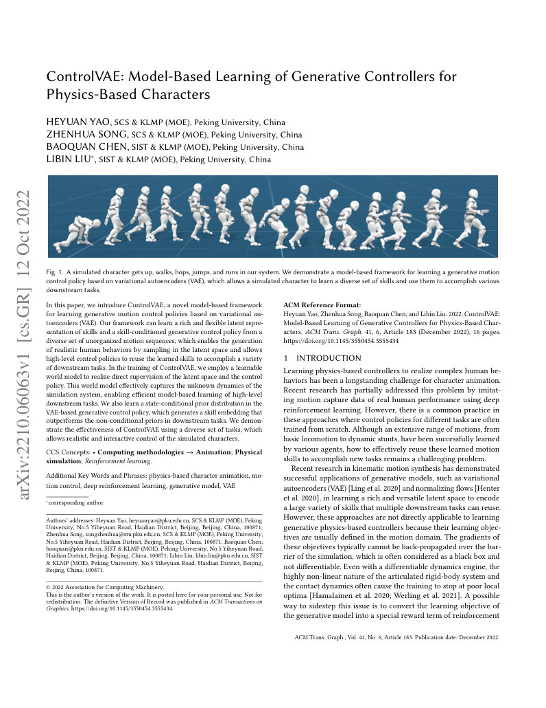
第 2 页Page 2PDF p.2
learning [Ho and Ermon 2016; Peng et al. 2022, 2021]. However, this approach will require training two coupled indirectly supervised systems, where the training process and the training objective often need to be carefully designed to achieve stable results.
学习中的一个特殊奖励项 [Ho and Ermon 2016; Peng et al. 2022, 2021]。然而，这种方法需要训练两个相互耦合、接受间接监督的系统，往往必须精心设计训练过程和训练目标，才能获得稳定的结果。
Model-based approaches, or, more specifically, those learning world models [Ha and Schmidhuber 2018], incorporate approximate models to predict the future states of the system given its previous states and the actions taken. The differentiable world model bridges the gap between the simulation and control policy, allowing the objectives defined in the motion domain to supervise the policy directly, thus achieving efficient and stable training [Deisenroth and Rasmussen 2011; Janner et al. 2021]. Recently, model-based reinforcement learning has shown promising results in learning to track complex human motions [Fussell et al. 2021]. The success of these studies suggests a possibility that a more flexible control model, such as a generative model like VAE, can be learned with the help of a learnable world model.
基于模型的方法，更具体地说，学习世界模型的方法 [Ha and Schmidhuber 2018]，引入近似模型，根据系统先前的状态和所采取的动作预测其未来状态。可微世界模型弥合了仿真与控制策略之间的鸿沟，使定义在动作域中的目标能够直接监督策略，从而实现高效而稳定的训练 [Deisenroth and Rasmussen 2011; Janner et al. 2021]。近期，基于模型的强化学习在学习跟踪复杂人类动作方面取得了可喜的成果 [Fussell et al. 2021]。这些研究的成功表明，借助可学习的世界模型，有可能学得更灵活的控制模型，例如 VAE 这样的生成模型。
In this paper, we introduce ControlVAE, a novel model-based framework for learning generative motion control policies based on variational autoencoders (VAE). Our framework can learn a rich and flexible latent representation of skills and a skill-conditioned generative control policy from a diverse set of unorganized motion sequences, which enables the generation of realistic human behaviors by sampling in the latent space and allows high-level control policies to reuse the learned skills to accomplish a variety of tasks.
本文提出 ControlVAE，一种用于学习基于变分自编码器（VAE）的生成式动作控制策略的新型基于模型框架。我们的框架能够从一组多样且未经组织的动作序列中，学习丰富而灵活的技能潜在表示以及以技能为条件的生成式控制策略，从而通过在潜空间中采样生成逼真的人类行为，并使高层控制策略能够复用所学技能来完成各种任务。
VAEs are commonly trained against the standard normal distribution [Kingma and Welling 2014; Ling et al. 2020]. However, our preliminary experiments show that such a non-conditional prior is not efficient in disentangling the representations of different skills. We thus model our VAE-based generative policy with a prior distribution conditional on the simulated character state. The latent skill embeddings generated from this conditional prior distribution achieve higher performance in downstream tasks than those learned using the non-conditional priors.
VAE 通常采用标准正态分布作为先验进行训练 [Kingma and Welling 2014; Ling et al. 2020]。然而，我们的初步实验表明，这种无条件先验无法有效解耦不同技能的表示。因此，我们采用以仿真角色状态为条件的先验分布，对基于 VAE 的生成式策略进行建模。由这一条件先验分布生成的潜在技能嵌入，在下游任务中的表现优于使用无条件先验学得的嵌入。
We employ a learnable world model to approximate the unknown dynamics of the simulation system, which is trained using online samples. We find this world model not only provides direct supervision for learning the latent space and the control policy, but further allows efficient model-based optimization of control policies of downstream tasks with model-based learning.
我们采用可学习的世界模型来近似仿真系统的未知动力学，并使用在线样本训练该模型。我们发现，这一世界模型不仅为潜空间和控制策略的学习提供直接监督，还能够通过基于模型的学习，对下游任务的控制策略进行高效的基于模型优化。
To evaluate our method, we train ControlVAE on a diverse set of locomotion skills and test its performance on several challenging downstream tasks. We further conduct studies to validate our design decisions both qualitatively and quantitatively.
为评估我们的方法，我们使用多种移动技能训练 ControlVAE，并在若干具有挑战性的下游任务上测试其性能。我们还开展进一步研究，从定性和定量两个方面验证各项设计决策。
2 RELATED WORK
2 相关工作
2.1 Physics-based Motion Controllers
2.1 基于物理的动作控制器
Research on developing physics-based control strategies to realize realistic and interactive motions has a long history in computer animation. The seminal works can be dated back to the 1990s, when locomotion control was realized based on careful motion analysis and hand-crafted controllers [Hodgins et al. 1995]. Robust locomotion controllers are later developed using abstract models [Coros et al. 2010; Lee et al. 2010; Yin et al. 2007], optimal control [Muico et al. 2011], model predictive control [Hämäläinen et al. 2015; Mordatch
在计算机动画领域，开发基于物理的控制策略以实现逼真且可交互的动作，已有悠久的研究历史。开创性工作可追溯至 20 世纪 90 年代，当时依靠细致的动作分析和人工设计的控制器实现移动控制 [Hodgins et al. 1995]。随后，研究者利用抽象模型 [Coros et al. 2010; Lee et al. 2010; Yin et al. 2007]、最优控制 [Muico et al. 2011]、模型预测控制 [Hämäläinen et al. 2015; Mordatch
et al. 2010], policy optimization [Tan et al. 2014], and reinforcement learning [Xie et al. 2020; Yin et al. 2021; Yu et al. 2018]. These approaches typically require sufficient prior knowledge and hand-tuned parameters or reward functions, hence can be hard to apply to complex motions and scenarios. Such difficulties motivate the so-called data-driven methods that generate natural motion by imitating human performance. A fundamental task of these approaches is to track a reference motion by learning feedback policies [Lee et al. 2010; Liu et al. 2016, 2012]. The development of deep reinforcement learning techniques further enables robust tracking of agile human motions [Peng et al. 2018] and to generalize to various body shapes [Won and Lee 2019] and environments [Xie et al. 2020].
et al. 2010]、策略优化 [Tan et al. 2014] 和强化学习 [Xie et al. 2020; Yin et al. 2021; Yu et al. 2018]。这些方法通常需要充分的先验知识，以及人工调节的参数或奖励函数，因此难以应用于复杂动作和场景。这些困难促使研究者提出所谓的数据驱动方法，通过模仿人类表演生成自然的动作。这类方法的一项基本任务是学习反馈策略，以跟踪参考动作 [Lee et al. 2010; Liu et al. 2016, 2012]。深度强化学习技术的发展进一步实现了对敏捷人类动作的鲁棒跟踪 [Peng et al. 2018]，并使其能够泛化至各种体型 [Won and Lee 2019] 和环境 [Xie et al. 2020]。
Based on the success of individual controllers, recent research starts to focus on creating multi-skilled characters. Training a robust tracking policy to track the results of a pre-trained kinematic controller allows the combined control strategy to imitate different target motions according to the task or user input [Bergamin et al. 2019; Park et al. 2019; Won et al. 2020]. However, the performance of such a combined strategy is limited to the capability of the kinematic controller, and it can be computationally expensive to evaluate both the networks of the tracking policy and kinematic controller at runtime. Individual physics-based control policies can be organized into a graph-like structure [Liu et al. 2016; Peng et al. 2018], which can be further broken down into short snippets and managed by a high-level scheduler [Liu and Hodgins 2017]. However, the system needs to maintain all the sub-controllers at runtime for downstream tasks. More recent studies [Luo et al. 2020; Merel et al. 2018, 2020; Peng et al. 2022, 2021; Won et al. 2022] develop various generative models to incorporate a diverse set of motions. The results are compact latent representations of skills that allow high-level policies to reuse multiple skills to accomplish downstream tasks. However, learning efficient representations of skills is a nontrivial problem. We develop several novel components in this work to ensure the performance of the learned skill embeddings in the downstream tasks, which are verified in a series of experiments.
在单个控制器取得成功的基础上，近期研究开始关注如何构建具有多种技能的角色。通过训练鲁棒的跟踪策略来跟踪预训练运动学控制器的输出，组合后的控制策略能够根据任务或用户输入模仿不同的目标动作 [Bergamin et al. 2019; Park et al. 2019; Won et al. 2020]。然而，这种组合策略的性能受限于运动学控制器的能力，而且在运行时同时计算跟踪策略网络和运动学控制器网络可能带来较高的计算开销。各个基于物理的控制策略可以组织成图状结构 [Liu et al. 2016; Peng et al. 2018]，还可进一步拆分为短片段，并由高层调度器管理 [Liu and Hodgins 2017]。然而，为完成下游任务，系统需要在运行时维护全部子控制器。更近期的研究 [Luo et al. 2020; Merel et al. 2018, 2020; Peng et al. 2022, 2021; Won et al. 2022] 开发了多种生成模型，以整合多样化的动作。这些方法得到紧凑的技能潜在表示，使高层策略能够复用多种技能来完成下游任务。然而，学习高效的技能表示并非易事。本工作开发了若干新颖组件，以确保所学技能嵌入在下游任务中的性能，并通过一系列实验进行了验证。
2.2 Generative Models in Motion Control
2.2 动作控制中的生成模型
Generative models have been extensively studied in kinematic motion synthesis. Early research learns statistical representation of motion based on the Gaussian Mixture Model [Min and Chai 2012] and Gaussian Process [Levine et al. 2012; Wang et al. 2008]. In the era of deep learning, the VAEs [Kingma and Welling 2014] have been realized using the mixture-of-expert network [Ling et al. 2020] and transformers [Petrovich et al. 2021] to encode motions into latent spaces. The MoGlow framework proposed by Henter et al. [2020] draws support from the normalizing flows [Kingma and Dhariwal 2018] for probabilistic motion generation. Li et al. [2022] train a GAN-based model to synthesize convincing long motion sequences from a short example. A generative model usually learns a compact latent space that encodes a variety of motions. Sampling in the latent space leads to natural kinematic motions, which allows a task-oriented high-level controller to reuse the motions in downstream tasks using either optimization [Holden et al. 2016; Min and Chai 2012] or learned policies [Levine et al. 2012; Ling et al. 2020].
生成模型在运动学动作合成领域已得到广泛研究。早期研究基于高斯混合模型 [Min and Chai 2012] 和高斯过程 [Levine et al. 2012; Wang et al. 2008] 学习动作的统计表示。在深度学习时代，研究者使用混合专家网络 [Ling et al. 2020] 和 Transformer [Petrovich et al. 2021] 实现 VAE [Kingma and Welling 2014]，将动作编码到潜空间中。Henter et al. [2020] 提出的 MoGlow 框架借助归一化流 [Kingma and Dhariwal 2018] 进行概率式动作生成。Li et al. [2022] 训练了一个基于 GAN 的模型，从一个短示例中合成逼真的长动作序列。生成模型通常学习一个紧凑的潜空间，用于编码多种动作。在潜空间中采样能够生成自然的运动学动作，使面向任务的高层控制器能够通过优化 [Holden et al. 2016; Min and Chai 2012] 或学习得到的策略 [Levine et al. 2012; Ling et al. 2020]，在下游任务中复用这些动作。
ACM Trans. Graph., Vol. 41, No. 6, Article 183. Publication date: December 2022.
ACM Trans. Graph.，第 41 卷，第 6 期，文章 183。出版日期：2022 年 12 月。
展开第 2 页原版整页（含全部图表、公式与页眉页脚）
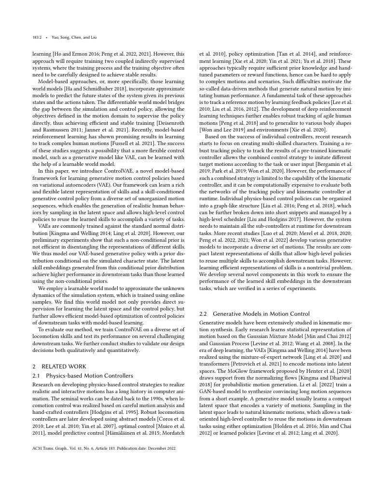
第 3 页Page 3PDF p.3
Physics-based controllers can also be formulated as generative models, where the samples in the latent space will be decoded into specific actions for the simulated character. Merel et al. [2018] learn an autoencoder that distills a large group of expert policies into a latent space, with which a high-level controller can be learned to accomplish difficult tasks like catching and carrying an object [Merel et al. 2020]. Similarly, Won et al. [2022] employ a conditional VAE and perform behavior cloning on expert trajectories. Luo et al. [2020] treat the composing weights of the motor primitives learned by the multiplicative compositional policies (MCP) [Peng et al. 2019] as the representation of skills and achieves interactive locomotion control of a simulated quadruped. Inspired by the generative adversarial imitation learning (GAIL) [Ho and Ermon 2016], Peng et al. [2021] include the adversarial motion prior into the reward function of reinforcement learning, encouraging the simulated character to finish a task using natural-looking actions. They later extend this framework to learn adversarial skill embeddings for a large range of motions [Peng et al. 2022]. Our ControlVAE is based on the conditional VAE. Unlike previous works using a standard normal distribution as the prior distribution of VAE [Ling et al. 2020; Won et al. 2022], we employ a state-conditional prior that creates better latent embeddings. We also employ a model-based learning algorithm to learn our ControlVAE model.
基于物理的控制器也可以表述为生成模型，其中潜空间中的样本被解码为仿真角色的具体动作。Merel et al. [2018] 学习了一个自编码器，将大量专家策略蒸馏到一个潜空间中，并可利用该潜空间学习高层控制器，以完成接住和搬运物体等困难任务 [Merel et al. 2020]。类似地，Won et al. [2022] 采用条件 VAE，并对专家轨迹进行行为克隆。Luo et al. [2020] 将乘法组合策略（MCP）[Peng et al. 2019] 所学运动基元的组合权重作为技能表示，实现了仿真四足角色的交互式移动控制。受生成对抗模仿学习（GAIL）[Ho and Ermon 2016] 启发，Peng et al. [2021] 将对抗动作先验纳入强化学习的奖励函数，鼓励仿真角色以自然的动作完成任务。随后，他们扩展了这一框架，为广泛的动作学习对抗技能嵌入 [Peng et al. 2022]。我们的 ControlVAE 基于条件 VAE。以往工作使用标准正态分布作为 VAE 的先验分布 [Ling et al. 2020; Won et al. 2022]，而我们采用以状态为条件的先验，以获得更好的潜在嵌入。我们还采用基于模型的学习算法来学习 ControlVAE 模型。
2.3 Model-based Learning
2.3 基于模型的学习
Model-based learning approaches realize control using the underlying model of a dynamic system. The models can be either accurate or approximated using learnable functions. Accurate models often come with differentiable simulators [Mora et al. 2021; Todorov et al. 2012; Werling et al. 2021]. They can be used in either offline or online optimization to construct motion controllers [Eom et al. 2019; Hong et al. 2019; Macchietto et al. 2009; Mora et al. 2021; Mordatch et al. 2010, 2012; Muico et al. 2011]. Approximate models, or the World Models [Ha and Schmidhuber 2018], are typically formulated as Gaussian Process [Deisenroth and Rasmussen 2011] or neural networks [Janner et al. 2021; Nagabandi et al. 2018]. They provide differentiable transition functions that allow gradients of learning objectives to pass through the barrier of the simulation [Chiappa et al. 2017; Heess et al. 2015; Schmidhuber 1990], thus enabling policy optimization to be solved efficiently using gradient-based techniques [Deisenroth and Rasmussen 2011; Heess et al. 2015; Janner et al. 2021; Nagabandi et al. 2018].
基于模型的学习方法利用动力系统的底层模型实现控制。这些模型既可以是精确模型，也可以是利用可学习函数构建的近似模型。精确模型通常由可微仿真器提供 [Mora et al. 2021; Todorov et al. 2012; Werling et al. 2021]。它们可用于离线或在线优化，以构建动作控制器 [Eom et al. 2019; Hong et al. 2019; Macchietto et al. 2009; Mora et al. 2021; Mordatch et al. 2010, 2012; Muico et al. 2011]。近似模型，也称世界模型 [Ha and Schmidhuber 2018]，通常被建模为高斯过程 [Deisenroth and Rasmussen 2011] 或神经网络 [Janner et al. 2021; Nagabandi et al. 2018]。它们提供可微的转移函数，使学习目标的梯度能够穿过仿真这一屏障 [Chiappa et al. 2017; Heess et al. 2015; Schmidhuber 1990]，从而能够利用基于梯度的技术高效求解策略优化问题 [Deisenroth and Rasmussen 2011; Heess et al. 2015; Janner et al. 2021; Nagabandi et al. 2018]。
The application of the reinforcement learning algorithms with learnable world models is rather sparse in physics-based character animation. While early studies in this category had been done in the 1990s [Grzeszczuk et al. 1998], SuperTrack [Fussell et al. 2021] is among the first frameworks that achieve successful tracking of a large diversity of skills. Our work is inspired by SuperTrack [Fussell et al. 2021]. We also learn a world model along with the control policy to achieve efficient training. However, unlike SuperTrack [Fussell et al. 2021], which learns individual tracking controllers, our system learns a VAE-based generative control policy and reusable skill embeddings, which enable multiple downstream tasks without training from scratch each time.
在基于物理的角色动画中，采用可学习世界模型的强化学习算法应用还相当少。尽管这一方向的早期研究在 20 世纪 90 年代就已开展 [Grzeszczuk et al. 1998]，SuperTrack [Fussell et al. 2021] 仍属于首批成功实现多种多样技能跟踪的框架。我们的工作受到 SuperTrack [Fussell et al. 2021] 的启发。我们也在学习控制策略的同时学习世界模型，以实现高效训练。然而，SuperTrack [Fussell et al. 2021] 学习的是各个独立的跟踪控制器，而我们的系统学习基于 VAE 的生成式控制策略以及可复用的技能嵌入，从而支持多种下游任务，无需每次都从头训练。
A concurrent study done by Won et al. [2022] shares a similar goal to our work. They also develop a VAE-based control policy and learn a world model to facilitate training. Our method differs from their approach in three ways: (a) Won et al. [2022] employ behavior cloning to train the control policy, which requires the demonstration of many pre-trained expert policies. Instead, our framework allows direct learning of the generative control policies from raw motion clips; (b) our method trains the world model along with the control policy, ensuring they are compatible. We believe this is critical for successful model-based learning of the downstream tasks. The same results are not demonstrated by Won et al. [2022]. The world model is learned offline in their system; (c) we employ a state-conditional prior distribution in our VAE-based model, which outperforms the non-conditional prior in accomplishing downstream tasks. In contrast, Won et al. [2022] use the standard state-independent prior.
Won et al. [2022] 同期开展的一项研究与我们的工作具有相似目标。他们也开发了基于 VAE 的控制策略，并学习世界模型以促进训练。我们的方法与其方法有三方面区别：(a) Won et al. [2022] 采用行为克隆来训练控制策略，这需要大量预训练专家策略的示范。相比之下，我们的框架支持直接从原始动作片段中学习生成式控制策略；(b) 我们的方法将世界模型与控制策略一同训练，确保两者相互兼容。我们认为，这对于成功实现下游任务的基于模型的学习至关重要。Won et al. [2022] 并未展示同样的结果。他们系统中的世界模型是离线学习的；(c) 我们在基于 VAE 的模型中采用以状态为条件的先验分布，在完成下游任务时，其表现优于无条件先验。相比之下，Won et al. [2022] 使用标准的、与状态无关的先验。
3 CONTROL VAE
3 控制 VAE
Figure 2 illustrates the overall structure of ControlVAE. In ControlVAE, a motion control policy is formulated as a conditional distribution \(\pi(\boldsymbol{a}|\boldsymbol{s},\boldsymbol{z})\). It computes an action \(\boldsymbol{a}\) to control the simulated character according to its current state \(\boldsymbol{s}\) and a latent variable \(\boldsymbol{z}\in\mathcal{Z}\) sampled from a prior distribution \(\boldsymbol{z}\sim p(\boldsymbol{z})\). We train this control policy to allow each latent variable \(\boldsymbol{z}\) to encode a specific skill, which enables a high-level policy to operate in the latent space \(\mathcal{Z}\) to accomplish downstream tasks.
图 2 展示了 ControlVAE 的整体结构。在 ControlVAE 中，动作控制策略被表述为条件分布 \(\pi(\boldsymbol{a}|\boldsymbol{s},\boldsymbol{z})\)。它根据仿真角色的当前状态 \(\boldsymbol{s}\)，以及从先验分布 \(\boldsymbol{z}\sim p(\boldsymbol{z})\) 中采样得到的潜变量 \(\boldsymbol{z}\in\mathcal{Z}\)，计算动作 \(\boldsymbol{a}\) 以控制角色。我们训练这一控制策略，使每个潜变量 \(\boldsymbol{z}\) 都能编码一种特定技能，从而使高层策略能够在潜空间 \(\mathcal{Z}\) 中进行操作，以完成下游任务。
More specifically, at each time step \(t\), the character observes its state \(\boldsymbol{s}_t\) and computes an action \(\boldsymbol{a}_t\sim\pi(\boldsymbol{a}_t|\boldsymbol{s}_t,\boldsymbol{z}_t)\), where the latent variable \(\boldsymbol{z}_t\) is provided by a high-level policy. The character then executes \(\boldsymbol{a}_t\) in the simulation and moves to a new state \(\boldsymbol{s}_{t+1}\) with the probability of transition given by \(p(\boldsymbol{s}_{t+1}|\boldsymbol{s}_t,\boldsymbol{a}_t)\). This process is then repeated, resulting in a simulated trajectory \(\tau^*=\{\boldsymbol{s}_0,\boldsymbol{a}_0,\boldsymbol{s}_1,\boldsymbol{a}_1,\dots,\boldsymbol{s}_{T-1},\boldsymbol{a}_{T-1},\boldsymbol{s}_T\}\) in which the character keeps moving and performs the skills defined by the sequence of latent codes \(\{\boldsymbol{z}_{0:T-1}\}\). Here we assume that \(\{\boldsymbol{z}_{0:T-1}\}\) are generated independently of each other.
更具体地，在每个时间步 \(t\)，角色观测自身状态 \(\boldsymbol{s}_t\)，并计算动作 \(\boldsymbol{a}_t\sim\pi(\boldsymbol{a}_t|\boldsymbol{s}_t,\boldsymbol{z}_t)\)，其中潜变量 \(\boldsymbol{z}_t\) 由高层策略提供。随后，角色在仿真中执行 \(\boldsymbol{a}_t\)，并按照 \(p(\boldsymbol{s}_{t+1}|\boldsymbol{s}_t,\boldsymbol{a}_t)\) 给出的转移概率转移到新状态 \(\boldsymbol{s}_{t+1}\)。不断重复这一过程，便得到仿真轨迹 \(\tau^*=\{\boldsymbol{s}_0,\boldsymbol{a}_0,\boldsymbol{s}_1,\boldsymbol{a}_1,\dots,\boldsymbol{s}_{T-1},\boldsymbol{a}_{T-1},\boldsymbol{s}_T\}\)，角色在其中持续运动，并执行由潜编码序列 \(\{\boldsymbol{z}_{0:T-1}\}\) 定义的技能。这里，我们假设 \(\{\boldsymbol{z}_{0:T-1}\}\) 中的各个潜编码彼此独立地生成。
What we are interested in is the character’s motion in this simulated trajectory, represented compactly as \(\tau=\{\boldsymbol{s}_{0:T}\}\). To produce realistic skills, we need to train the control policy \(\pi(\boldsymbol{a}_t|\boldsymbol{s}_t,\boldsymbol{z}_t)\) so that the distribution of the generated motions \(p(\tau)\) matches the distribution of a motion dataset \(\mathcal{D}=\{\tilde{\tau}_i\}\). However, the computation of \(p(\tau)\) relies on a very complex likelihood \(p(\boldsymbol{s}_{0:T}|\boldsymbol{z}_{0:T-1})\),
我们关注的是角色在这条仿真轨迹中的运动，可将其简洁地表示为 \(\tau=\{\boldsymbol{s}_{0:T}\}\)。为了生成逼真的技能，我们需要训练控制策略 \(\pi(\boldsymbol{a}_t|\boldsymbol{s}_t,\boldsymbol{z}_t)\)，使生成动作的分布 \(p(\tau)\) 与动作数据集 \(\mathcal{D}=\{\tilde{\tau}_i\}\) 的分布相匹配。然而，\(p(\tau)\) 的计算依赖于一个非常复杂的似然 \(p(\boldsymbol{s}_{0:T}|\boldsymbol{z}_{0:T-1})\)，
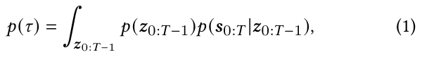
which makes the computation intractable. The variational autoencoder (VAE) [Kingma and Welling 2014] thus considers its evidence lower bound (ELBO). Considering that \(\boldsymbol{s}_{t+1}\) and \(\boldsymbol{a}_t\) depend only on \(\boldsymbol{s}_t\) and \(\boldsymbol{z}_t\), also \(\{\boldsymbol{z}_t\}\) are independent to each other, the ELBO of Equation (1) can be written as
这使得该计算难以求解。因此，变分自编码器（VAE）[Kingma and Welling 2014] 转而考虑其证据下界（ELBO）。考虑到 \(\boldsymbol{s}_{t+1}\) 和 \(\boldsymbol{a}_t\) 仅依赖于 \(\boldsymbol{s}_t\) 和 \(\boldsymbol{z}_t\)，且 \(\{\boldsymbol{z}_t\}\) 中的各个潜变量相互独立，式 (1) 的 ELBO 可写为
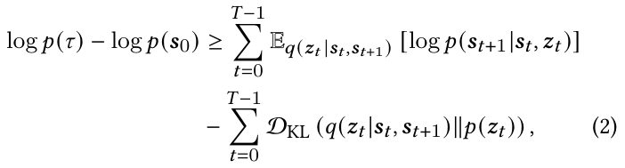
ACM Trans. Graph., Vol. 41, No. 6, Article 183. Publication date: December 2022.
ACM Trans. Graph.，第 41 卷，第 6 期，文章编号 183。出版日期：2022 年 12 月。
展开第 3 页原版整页（含全部图表、公式与页眉页脚）
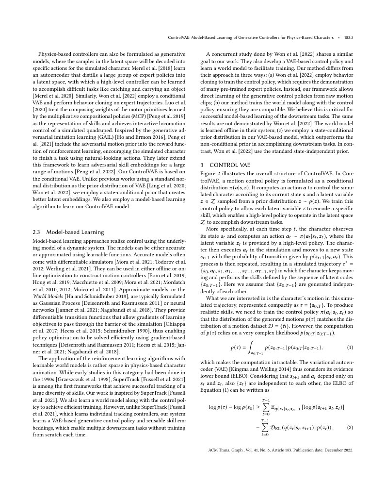
第 4 页Page 4PDF p.4
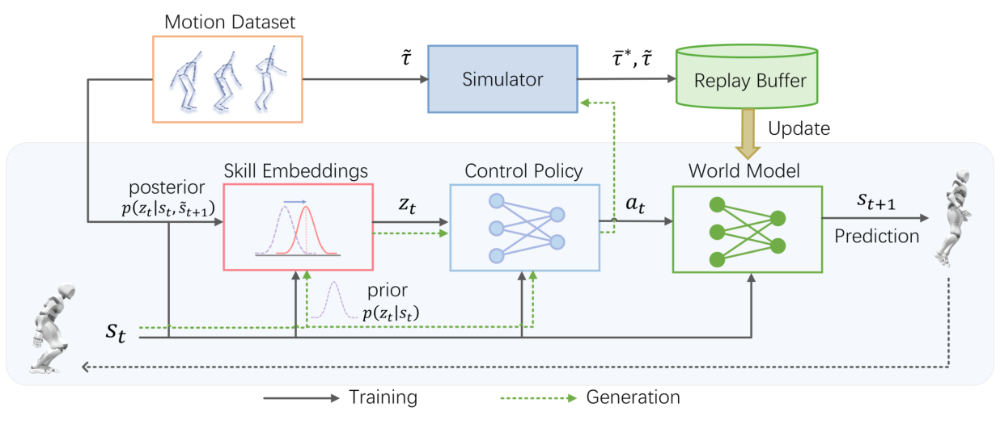
Fig. 2. Overview of our ControlVAE System.
图 2. 我们的 ControlVAE 系统概览。
where \(q(\boldsymbol{z}_t|\boldsymbol{s}_t,\boldsymbol{s}_{t+1})\) is the so-called variational distribution, which approximates the true posterior distribution of the skill variable \(p(\boldsymbol{z}_t|\tau)\) and is assumed to depend on only the state transition, denoted as \((\boldsymbol{s}_t,\boldsymbol{s}_{t+1})\), \(p(\boldsymbol{s}_{t+1}|\boldsymbol{s}_t,z_t)\) represents the probability of this state transition conditional on \(\boldsymbol{z}_t\), and \(p(\boldsymbol{s}_0)\) is the distribution of the start states.
其中，\(q(\boldsymbol{z}_t|\boldsymbol{s}_t,\boldsymbol{s}_{t+1})\) 是所谓的变分分布，用于近似技能变量的真实后验分布 \(p(\boldsymbol{z}_t|\tau)\)，并假定其仅依赖于记作 \((\boldsymbol{s}_t,\boldsymbol{s}_{t+1})\) 的状态转移；\(p(\boldsymbol{s}_{t+1}|\boldsymbol{s}_t,z_t)\) 表示以 \(\boldsymbol{z}_t\) 为条件的这一状态转移的概率，而 \(p(\boldsymbol{s}_0)\) 是初始状态的分布。
The ELBO essentially defines an autoencoder, where the variational distribution \(q(\boldsymbol{z}_t|\boldsymbol{s}_t,\boldsymbol{s}_{t+1})\) describes the encoding process that a skill representation \(\boldsymbol{z}_t\) is extracted from a pair of consecutive states \((\boldsymbol{s}_t,\boldsymbol{s}_{t+1})\), and \(p(\boldsymbol{s}_{t+1}|\boldsymbol{s}_t,z_t)\) characterizes the decoding process where \(\boldsymbol{s}_{t+1}\) is reconstructed from the skill embedding \(\boldsymbol{z}_t\). The KL-divergence in Equation (2) can be considered as a regularization that encourages the approximate posterior to be close to the prior \(p(\boldsymbol{z})\), so that each sample drawn from \(p(\boldsymbol{z})\) can be decoded into a realistic skill.
ELBO 实质上定义了一个自编码器，其中变分分布 \(q(\boldsymbol{z}_t|\boldsymbol{s}_t,\boldsymbol{s}_{t+1})\) 描述了从一对连续状态 \((\boldsymbol{s}_t,\boldsymbol{s}_{t+1})\) 中提取技能表示 \(\boldsymbol{z}_t\) 的编码过程，而 \(p(\boldsymbol{s}_{t+1}|\boldsymbol{s}_t,z_t)\) 则刻画了由技能嵌入 \(\boldsymbol{z}_t\) 重建 \(\boldsymbol{s}_{t+1}\) 的解码过程。式 (2) 中的 KL 散度可视为一种正则化，它促使近似后验接近先验 \(p(\boldsymbol{z})\)，从而使从 \(p(\boldsymbol{z})\) 中抽取的每个样本都能被解码为一种逼真的技能。
3.1 Generation
3.1 生成
A common choice of the prior \(p(\boldsymbol{z})\) is the standard multivariate normal distribution \(\mathcal{N}(\boldsymbol{0},\boldsymbol{I})\) [Kingma and Welling 2014; Ling et al. 2020]. However, in our preliminary experiments with this state-independent prior, the character often keeps changing skills quickly, leading to jerky movements and occasional falls. Downstream control policies also perform less efficiently on this prior. For example, the character can encounter difficulties in maintaining a constant moving direction in a direction control task. We presume that this state-independent prior distribution may not provide enough information for the regularization. The encoder thus computes an inconsistent skill distribution, where the same skill is encoded into different parts of the latent space at different states.
先验 \(p(\boldsymbol{z})\) 的一种常见选择是标准多元正态分布 \(\mathcal{N}(\boldsymbol{0},\boldsymbol{I})\) [Kingma and Welling 2014; Ling et al. 2020]。然而，在使用这种与状态无关的先验进行初步实验时，角色经常持续快速切换技能，导致动作不连贯，偶尔还会跌倒。基于这种先验的下游控制策略效率也较低。例如，在方向控制任务中，角色可能难以保持恒定的移动方向。我们推测，这种与状态无关的先验分布可能无法为正则化提供足够的信息。因此，编码器计算得到的技能分布缺乏一致性，同一种技能在不同状态下会被编码到潜空间的不同区域。
To deal with this problem, we leverage a conditional distribution \(p(\boldsymbol{z}_t|\boldsymbol{s}_t)\) as the prior and formulate it as a Gaussian distribution with diagonal covariance
为解决这一问题，我们采用条件分布 \(p(\boldsymbol{z}_t|\boldsymbol{s}_t)\) 作为先验，并将其建模为具有对角协方差的高斯分布
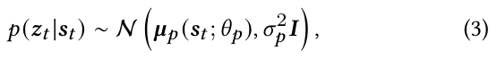
where the mean \(\boldsymbol{\mu}_p\) is a neural network parameterized with \(\theta_p\) and the standard deviation \(\sigma\) is a hyperparameter.
其中，均值 \(\boldsymbol{\mu}_p\) 是由 \(\theta_p\) 参数化的神经网络，标准差 \(\sigma\) 是一个超参数。
We then generate a motion trajectory according to a sequence of skill codes \(\{\boldsymbol{z}_t\}\) by simulating the character with the actions computed by the policy \(\pi(\boldsymbol{a}_t|\boldsymbol{s}_t,\boldsymbol{z}_t)\). We model the policy as a Gaussian distribution
随后，我们利用策略 \(\pi(\boldsymbol{a}_t|\boldsymbol{s}_t,\boldsymbol{z}_t)\) 计算得到的动作对角色进行仿真，从而根据技能编码序列 \(\{\boldsymbol{z}_t\}\) 生成一条运动轨迹。我们将该策略建模为高斯分布
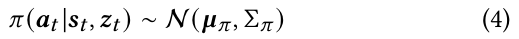
with a diagonal covariance matrix \(\boldsymbol{\Sigma}_{\pi}\) and the mean \(\boldsymbol{\mu}_{\pi}\) as a neural network \(\boldsymbol{\mu}_{\pi}(\boldsymbol{s}_t,\boldsymbol{z}_t;\theta_{\pi})\) parameterized by \(\theta_{\pi}\). The generation process is then characterized by the log-likelihood in Equation (2)
其协方差矩阵 \(\boldsymbol{\Sigma}_{\pi}\) 为对角矩阵，均值 \(\boldsymbol{\mu}_{\pi}\) 为由 \(\theta_{\pi}\) 参数化的神经网络 \(\boldsymbol{\mu}_{\pi}(\boldsymbol{s}_t,\boldsymbol{z}_t;\theta_{\pi})\)。于是，生成过程可由式 (2) 中的对数似然刻画
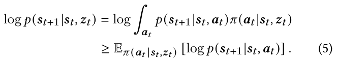
However, the true transition probability distribution \(p(\boldsymbol{s}_{t+1}|\boldsymbol{s}_t,\boldsymbol{a}_t)\) is not known since we consider the simulation process as a black box. We opt to approximate it using a world model \(\omega(\boldsymbol{s}_{t+1}|\boldsymbol{s}_t,\boldsymbol{a}_t)\), which is another Gaussian distribution
然而，由于我们将仿真过程视为黑箱，真实的转移概率分布 \(p(\boldsymbol{s}_{t+1}|\boldsymbol{s}_t,\boldsymbol{a}_t)\) 是未知的。我们选择使用世界模型 \(\omega(\boldsymbol{s}_{t+1}|\boldsymbol{s}_t,\boldsymbol{a}_t)\) 来近似该分布，这一模型也是一个高斯分布
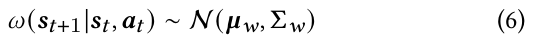
with a diagonal covariance matrix \(\boldsymbol{\Sigma}_w\) and the mean \(\boldsymbol{\mu}_w\) computed as a neural network \(\boldsymbol{\mu}_w(\boldsymbol{s}_t,\boldsymbol{a}_t;\theta_w)\) parameterized by \(\theta_w\).
其协方差矩阵 \(\boldsymbol{\Sigma}_w\) 为对角矩阵，均值 \(\boldsymbol{\mu}_w\) 由以 \(\theta_w\) 为参数的神经网络 \(\boldsymbol{\mu}_w(\boldsymbol{s}_t,\boldsymbol{a}_t;\theta_w)\) 计算得到。
3.2 Inference
3.2 推断
During the training, we need to infer the approximate posterior distribution of the skill variable \(q(\boldsymbol{z}_t|\boldsymbol{s}_t,\boldsymbol{s}_{t+1})\) according to each pair of states \((\boldsymbol{s}_t,\boldsymbol{s}_{t+1})\) in a state transition. Again, we let \(q(\boldsymbol{z}_t|\boldsymbol{s}_t,\boldsymbol{s}_{t+1})\) be a Gaussian distribution
在训练过程中，我们需要根据每次状态转移中的状态对 \((\boldsymbol{s}_t,\boldsymbol{s}_{t+1})\)，推断技能变量的近似后验分布 \(q(\boldsymbol{z}_t|\boldsymbol{s}_t,\boldsymbol{s}_{t+1})\)。同样，我们令 \(q(\boldsymbol{z}_t|\boldsymbol{s}_t,\boldsymbol{s}_{t+1})\) 为高斯分布
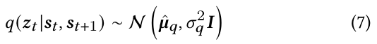
with a diagonal covariance. Considering that \(q(\boldsymbol{z}_t|\boldsymbol{s}_t,\boldsymbol{s}_{t+1})\) needs to stay close to the prior \(p(\boldsymbol{z}_t|\boldsymbol{s}_t)\), we let \(\sigma_q=\sigma_p\). Rather than directly learning the mean \(\hat{\boldsymbol{\mu}}_q\), we learn the residual between \(\hat{\boldsymbol{\mu}}_q\) and the mean of the prior, \(\boldsymbol{\mu}_p\). Specifically, we compute
其协方差为对角形式。考虑到 \(q(\boldsymbol{z}_t|\boldsymbol{s}_t,\boldsymbol{s}_{t+1})\) 需要保持接近先验 \(p(\boldsymbol{z}_t|\boldsymbol{s}_t)\)，我们令 \(\sigma_q=\sigma_p\)。我们不直接学习均值 \(\hat{\boldsymbol{\mu}}_q\)，而是学习 \(\hat{\boldsymbol{\mu}}_q\) 与先验均值 \(\boldsymbol{\mu}_p\) 之间的残差。具体而言，我们计算
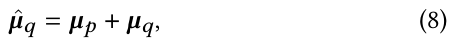
where \(\boldsymbol{\mu}_q=\boldsymbol{\mu}_q(\boldsymbol{s}_t,\boldsymbol{s}_{t+1};\theta_q)\) is a residual network parameterized by \(\theta_q\). This structure is inspired by the SRNN [Fraccaro et al. 2016]. It
其中，\(\boldsymbol{\mu}_q=\boldsymbol{\mu}_q(\boldsymbol{s}_t,\boldsymbol{s}_{t+1};\theta_q)\) 是由 \(\theta_q\) 参数化的残差网络。这一结构受到 SRNN [Fraccaro et al. 2016] 的启发。它
展开第 4 页原版整页（含全部图表、公式与页眉页脚）
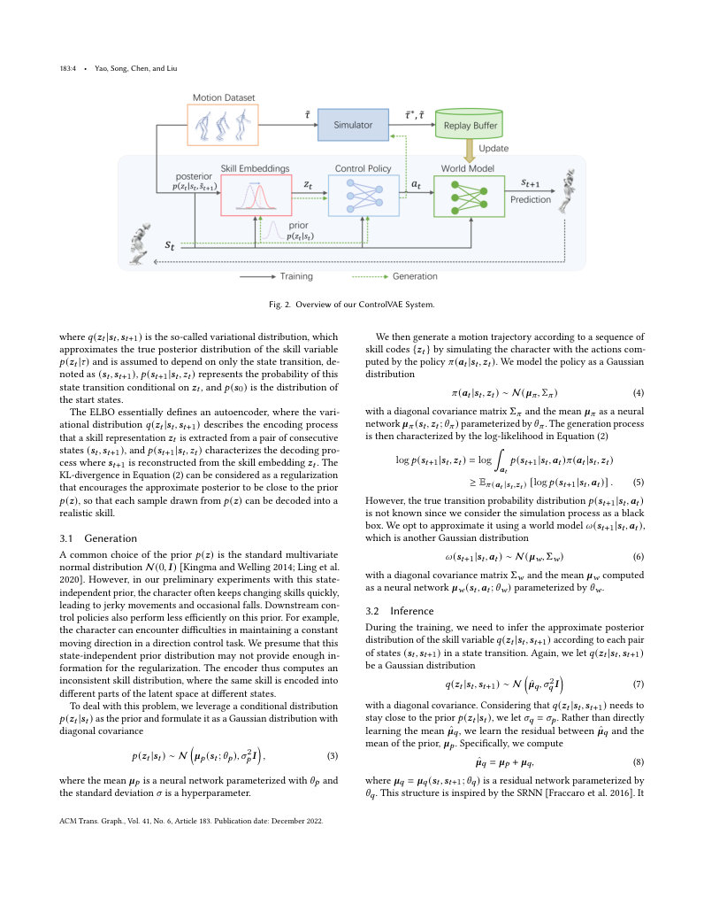
第 5 页Page 5PDF p.5
makes the KL-divergence in Equation (2) independent of the prior \(p(\mathbf{z}_t\mid\mathbf{s}_t)\) and allows an efficient computation of
使式 (2) 中的 KL 散度独立于先验分布 \(p(\mathbf{z}_t\mid\mathbf{s}_t)\)，并可高效计算为
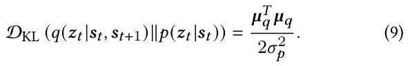
The training process can then be viewed as learning how to correct the prior distribution using the information from the next state \(\mathbf{s}_{t+1}\).
因此，训练过程可以视为学习如何利用下一状态 \(\mathbf{s}_{t+1}\) 的信息来修正先验分布。
3.3 Training
3.3 训练
3.3.1 Control VAE. The training of ControlVAE is then formulated as a maximum likelihood estimation (MLE) problem over the motion dataset \(\mathcal{D}=\{\tilde{\tau}_i\}\). We solve this problem by maximizing the ELBO in Equation (2), where the control policy \(\pi(\mathbf{a}_t\mid\mathbf{s}_t,\mathbf{z}_t)\), the conditional prior \(p(\mathbf{z}_t\mid\mathbf{s}_t)\), and the approximate posterior \(q(\mathbf{z}_t\mid\mathbf{s}_t,\mathbf{s}_{t+1})\) are trained together. The world model \(\omega(\mathbf{s}_{t+1}\mid\mathbf{s}_t,\mathbf{a}_t)\) is learned separately, as will be described later.
3.3.1 Control VAE。由此，ControlVAE 的训练被表述为动作数据集 \(\mathcal{D}=\{\tilde{\tau}_i\}\) 上的最大似然估计（MLE）问题。我们通过最大化式 (2) 中的 ELBO 来求解该问题，其中控制策略 \(\pi(\mathbf{a}_t\mid\mathbf{s}_t,\mathbf{z}_t)\)、条件先验 \(p(\mathbf{z}_t\mid\mathbf{s}_t)\) 和近似后验 \(q(\mathbf{z}_t\mid\mathbf{s}_t,\mathbf{s}_{t+1})\) 一同训练。世界模型 \(\omega(\mathbf{s}_{t+1}\mid\mathbf{s}_t,\mathbf{a}_t)\) 则单独学习，具体过程将在后文介绍。
Instead of evaluating Equation (2) in a time step-wise manner, we compute it over synthetic trajectories. Specifically, we pick a random start state \(\tilde{\mathbf{s}}_0\) and generate a synthetic trajectory that tracks the corresponding reference clip \(\tilde{\tau}\) starting from \(\tilde{\mathbf{s}}_0\) in \(\mathcal{D}\). This is achieved by recursively applying the control policy \(\pi(\mathbf{a}_t\mid\mathbf{s}_t,\mathbf{z}_t)\) in the world model \(\omega(\mathbf{s}_{t+1}\mid\mathbf{s}_t,\mathbf{a}_t)\). In this process, the latent variables \(\mathbf{z}_t\) are sampled from the approximate posterior \(q(\mathbf{z}_t\mid\mathbf{s}_t,\tilde{\mathbf{s}}_{t+1})\), where the future states \(\tilde{\mathbf{s}}_{t+1}\) in the state transitions are extracted from \(\tilde{\tau}\). The reparameterization trick [Kingma and Welling 2014] is used when sampling \(\mathbf{z}_t\) to ensure the backpropagation of the gradients.
我们在合成轨迹上计算式 (2)，而不是逐时间步求值。具体而言，我们随机选取一个初始状态 \(\tilde{\mathbf{s}}_0\)，并生成一条合成轨迹，用于跟踪 \(\mathcal{D}\) 中从 \(\tilde{\mathbf{s}}_0\) 开始的相应参考片段 \(\tilde{\tau}\)。这一过程通过在世界模型 \(\omega(\mathbf{s}_{t+1}\mid\mathbf{s}_t,\mathbf{a}_t)\) 中递归应用控制策略 \(\pi(\mathbf{a}_t\mid\mathbf{s}_t,\mathbf{z}_t)\) 来实现。在此过程中，潜变量 \(\mathbf{z}_t\) 从近似后验 \(q(\mathbf{z}_t\mid\mathbf{s}_t,\tilde{\mathbf{s}}_{t+1})\) 中采样，其中状态转移中的未来状态 \(\tilde{\mathbf{s}}_{t+1}\) 提取自 \(\tilde{\tau}\)。采样 \(\mathbf{z}_t\) 时采用重参数化技巧 [Kingma and Welling 2014]，以确保梯度能够反向传播。
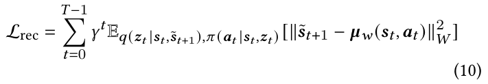
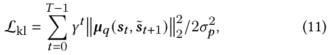
where the states labeled with a tilde (\(\tilde{}\)) are extracted from the reference clip \(\tilde{\tau}\) and those without it are from the synthetic trajectory. Considering that the synthetic trajectory is constructed using the approximate world model, the states in the trajectory can deviate gradually from the true simulation. A discount factor \(\gamma\) is thus employed to lower the weights of these inaccurate states along the trajectory. Here we use \(\gamma=0.95\) in this paper.
其中，带波浪号（\(\tilde{}\)）的状态提取自参考片段 \(\tilde{\tau}\)，不带该符号的状态则来自合成轨迹。由于合成轨迹使用近似世界模型构建，轨迹中的状态可能会逐渐偏离真实仿真。因此，我们采用折扣因子 \(\gamma\) 来降低轨迹中这些不准确状态的权重。本文取 \(\gamma=0.95\)。
In addition to the above ELBO losses, following SuperTrack [Fussell et al. 2021], we regularize the magnitude of the actions in terms of both the \(L_1\) and \(L_2\) metrics to prevent excessive control. The corresponding loss term is defined as
除上述 ELBO 损失外，我们遵循 SuperTrack [Fussell et al. 2021]，同时采用 \(L_1\) 和 \(L_2\) 度量对动作幅值进行正则化，以防止控制过度。相应的损失项定义为
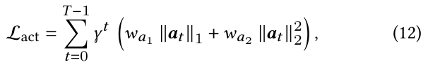
which is discounted similarly to the ELBO losses. In practice, we find \(L_1\) term can also be replaced with a larger \(w_{a_2}\) weight. The final objective for training the ControlVAE is then given by
该项采用与 ELBO 损失类似的方式进行折扣。在实践中，我们发现也可以通过增大权重 \(w_{a_2}\) 来替代 \(L_1\) 项。因此，训练 ControlVAE 的最终目标为
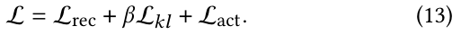
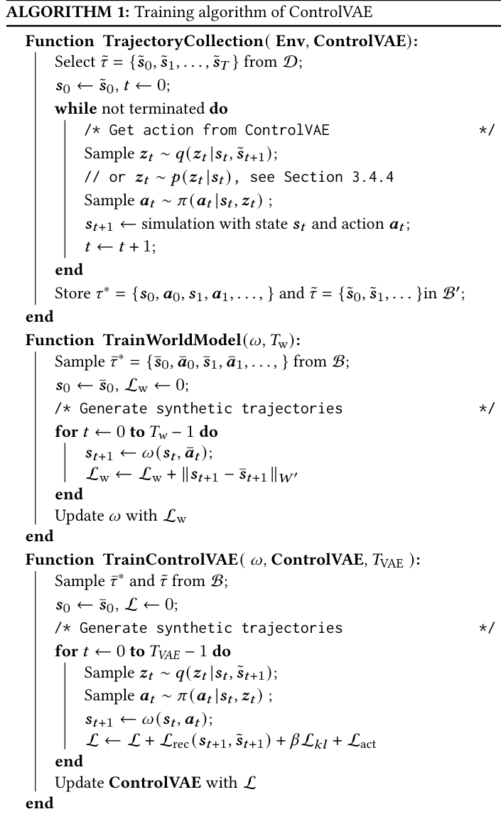
Following \(\beta\)-VAE [Higgins et al. 2017], we employ a weight parameter \(\beta\) for the KL-divergence loss, which increases once every 500 training epochs from 0.01 to 0.1 during the training.
遵循 \(\beta\)-VAE [Higgins et al. 2017]，我们为 KL 散度损失引入权重参数 \(\beta\)，在训练过程中每隔 500 个训练轮次增大一次，使其从 0.01 增至 0.1。
3.3.2 World Model. The learning process of the world model largely repeats the same process in SuperTrack [Fussell et al. 2021]. Specifically, \(\omega(\mathbf{s}_{t+1}\mid\mathbf{s}_t,\mathbf{a}_t)\) is learned based on a collection of simulated trajectories, \(\mathcal{B}=\{\tau_j^*\}\). We collect these trajectories by executing the current control policy in the simulation with the start states and skill latent variables extracted from random reference trajectories in \(\mathcal{D}\). We then solve an MLE problem again to train \(\omega(\mathbf{s}_{t+1}\mid\mathbf{s}_t,\mathbf{a}_t)\). Similar to the learning of the ControlVAE, we generate a synthetic trajectory starting from a random state \(\bar{\mathbf{s}}_0\) in \(\mathcal{B}\) by executing the recorded sequence of actions \(\{\bar{\mathbf{a}}_t\}\) in the world model. The loss function is then computed as
3.3.2 世界模型。世界模型的学习过程基本沿用 SuperTrack [Fussell et al. 2021] 中的相同流程。具体而言，\(\omega(\mathbf{s}_{t+1}\mid\mathbf{s}_t,\mathbf{a}_t)\) 基于仿真轨迹集合 \(\mathcal{B}=\{\tau_j^*\}\) 进行学习。我们从 \(\mathcal{D}\) 中随机选取参考轨迹，提取初始状态和技能潜变量，并在仿真中执行当前控制策略，以收集这些轨迹。随后，我们再次求解一个 MLE 问题，以训练 \(\omega(\mathbf{s}_{t+1}\mid\mathbf{s}_t,\mathbf{a}_t)\)。与 ControlVAE 的学习类似，我们从 \(\mathcal{B}\) 中的随机状态 \(\bar{\mathbf{s}}_0\) 出发，在世界模型中执行记录的动作序列 \(\{\bar{\mathbf{a}}_t\}\)，从而生成一条合成轨迹。损失函数随后计算为
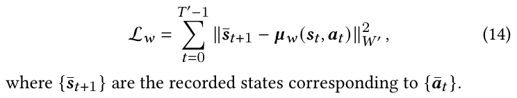
where \(\{\bar{\mathbf{s}}_{t+1}\}\) are the recorded states corresponding to \(\{\bar{\mathbf{a}}_t\}\).
其中，\(\{\bar{\mathbf{s}}_{t+1}\}\) 是与 \(\{\bar{\mathbf{a}}_t\}\) 对应的记录状态。
ACM Trans. Graph., Vol. 41, No. 6, Article 183. Publication date: December 2022.
ACM Trans. Graph.，第 41 卷，第 6 期，文章编号 183。出版日期：2022 年 12 月。
展开第 5 页原版整页（含全部图表、公式与页眉页脚）
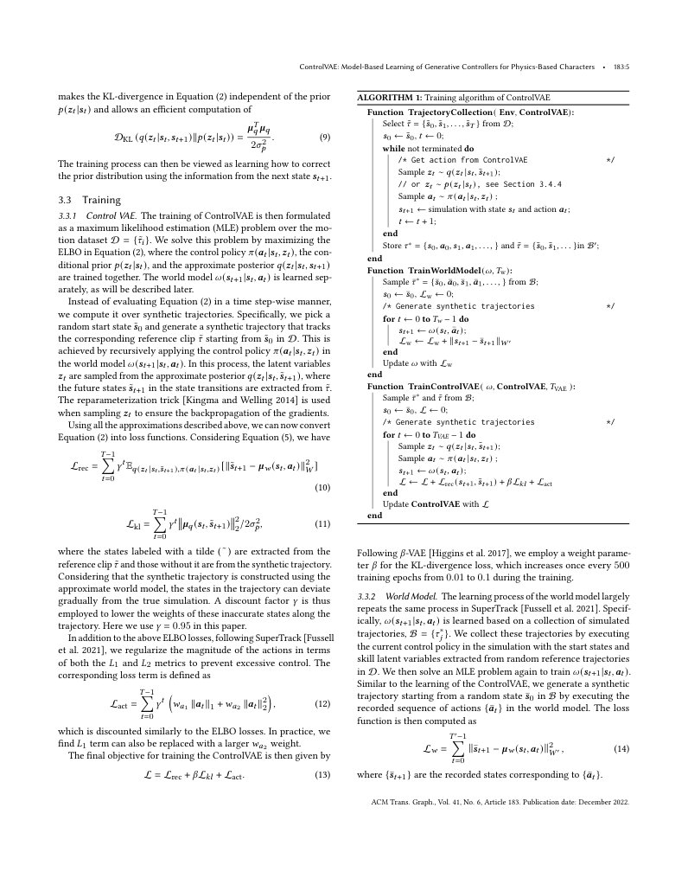
第 6 页Page 6PDF p.6
3.3.3 Training Process. During training, we first collect a number of simulated trajectories then update the world model and the ControlVAE in tandem as illustrated in Algorithm 1.
3.3.3 训练过程。在训练期间，我们首先收集若干仿真轨迹，然后依次更新世界模型和 ControlVAE，如算法 1 所示。
Trajectory collection. At the beginning of each training epoch, we select a start state \(\mathbf{s}_0\) from a random trajectory \(\tilde{\tau}\) in the motion dataset \(\mathcal{D}\). Then the control policy \(\pi(\mathbf{a}_t\mid\mathbf{s}_t,\mathbf{z}_t)\) is evaluated to track \(\tilde{\tau}\), using the latent skill variable sampled from the posterior distribution \(q(\mathbf{z}_t\mid\mathbf{s}_t,\tilde{\mathbf{s}}_{t+1})\), conditional on the current state \(\mathbf{s}_t\) of the character and the corresponding next reference state \(\tilde{\mathbf{s}}_{t+1}\) in \(\tilde{\tau}\). The character then performs the action \(\mathbf{a}_t\) in the simulation, resulting in a new state \(\mathbf{s}_{t+1}\). This process is repeated until a termination condition is satisfied. We then store the simulated trajectory \(\tau^*\) and corresponding reference trajectory \(\tilde{\tau}\) in a temporary buffer \(\mathcal{B}'\), and start a new trajectory from another random state. This trajectory collection procedure is ended when the number of states in \(\mathcal{B}'\) exceeds a predefined size \(N_{B'}\). Then the temporary buffer \(\mathcal{B}'\) is merged into \(\mathcal{B}\), replacing the oldest trajectories and keeping the size of \(\mathcal{B}\) smaller than \(N_B\). Here we use \(N_B=5\times10^4\) and \(N_{B'}=2048\).
轨迹收集。在每个训练轮次开始时，我们从动作数据集 \(\mathcal{D}\) 中的一条随机轨迹 \(\tilde{\tau}\) 选取初始状态 \(\mathbf{s}_0\)。随后，使用从后验分布 \(q(\mathbf{z}_t\mid\mathbf{s}_t,\tilde{\mathbf{s}}_{t+1})\) 采样得到的技能潜变量，计算控制策略 \(\pi(\mathbf{a}_t\mid\mathbf{s}_t,\mathbf{z}_t)\) 以跟踪 \(\tilde{\tau}\)；该后验分布以角色的当前状态 \(\mathbf{s}_t\) 和 \(\tilde{\tau}\) 中对应的下一参考状态 \(\tilde{\mathbf{s}}_{t+1}\) 为条件。角色随后在仿真中执行动作 \(\mathbf{a}_t\)，得到新状态 \(\mathbf{s}_{t+1}\)。重复这一过程，直至满足终止条件。然后，我们将仿真轨迹 \(\tau^*\) 及其对应的参考轨迹 \(\tilde{\tau}\) 存入临时缓冲区 \(\mathcal{B}'\)，并从另一个随机状态开始一条新轨迹。当 \(\mathcal{B}'\) 中的状态数量超过预设大小 \(N_{B'}\) 时，结束这一轨迹收集过程。随后，将临时缓冲区 \(\mathcal{B}'\) 合并到 \(\mathcal{B}\) 中，替换最早的轨迹，并使 \(\mathcal{B}\) 的大小保持小于 \(N_B\)。这里取 \(N_B=5\times10^4\)，\(N_{B'}=2048\)。
We employ an early termination strategy to prevent \(\mathcal{B}\) from recording too many bad simulation samples. A simulation will be terminated if the trajectory is longer than \(T_{\text{max}}=512\) time steps or if the tracking error of the character’s head has exceeded \(d_{\text{max}}=0.5\,m\) for more than \(T_{\text{term}}=1\) second.
我们采用提前终止策略，防止 \(\mathcal{B}\) 记录过多质量较差的仿真样本。如果轨迹长度超过 \(T_{\text{max}}=512\) 个时间步，或者角色头部的跟踪误差超过 \(d_{\text{max}}=0.5\,m\) 且持续时间超过 \(T_{\text{term}}=1\) 秒，则终止仿真。
Update world model. We then update the world model as described in Section 3.3.2. More specifically, we extract a batch of \(N_{\text{w}}\) random clips \(\{\bar{\tau}^*\}\) of length \(T_{\text{w}}\) from \(\mathcal{B}\), where each \(\bar{\tau}^*=\{\bar{\mathbf{s}}_{0:T_{\text{w}}},\bar{\mathbf{a}}_{0:T_{\text{w}}-1}\}\). Then \(N_{\text{w}}\) synthetic trajectories are generated by unrolling the world model using \(\bar{\mathbf{s}}_0\) and \(\{\bar{\mathbf{a}}_{0:T_{\text{w}}-1}\}\) to compute the loss in Equation (14). The world model is then updated using the gradients of the loss function. This updating process is repeated 8 times in each training epoch with \(T_{\text{w}}=8\) and \(N_{\text{w}}=512\).
更新世界模型。随后，我们按照第 3.3.2 节所述更新世界模型。具体而言，我们从 \(\mathcal{B}\) 中随机提取一批包含 \(N_{\text{w}}\) 个片段的样本 \(\{\bar{\tau}^*\}\)，每个片段的长度为 \(T_{\text{w}}\)，且每个 \(\bar{\tau}^*=\{\bar{\mathbf{s}}_{0:T_{\text{w}}},\bar{\mathbf{a}}_{0:T_{\text{w}}-1}\}\)。然后，使用 \(\bar{\mathbf{s}}_0\) 和 \(\{\bar{\mathbf{a}}_{0:T_{\text{w}}-1}\}\) 对世界模型进行轨迹展开，生成 \(N_{\text{w}}\) 条合成轨迹，以计算式 (14) 中的损失。随后，利用损失函数的梯度更新世界模型。每个训练轮次中重复这一更新过程 8 次，其中 \(T_{\text{w}}=8\)，\(N_{\text{w}}=512\)。
Update ControlVAE. At last, the ControlVAE is updated as described in Section 3.3.1. Similar to the training of the world model, we generate a batch of \(N_{\text{VAE}}=512\) synthetic trajectories to evaluate the loss functions in Equation (13), where each trajectory has \(T_{\text{VAE}}=24\) frames. To ensure a good coverage over the state space, the start states of these synthetic trajectories are randomly selected from the simulation buffer \(\mathcal{B}\), and the corresponding motion clips in \(\mathcal{D}\) are extracted as the reference. We update the ControlVAE models 8 times before starting the next training epoch.
更新 ControlVAE。最后，按照第 3.3.1 节所述更新 ControlVAE。与世界模型的训练类似，我们生成一批 \(N_{\text{VAE}}=512\) 条合成轨迹，以计算式 (13) 中的损失函数，其中每条轨迹包含 \(T_{\text{VAE}}=24\) 帧。为确保充分覆盖状态空间，这些合成轨迹的初始状态从仿真缓冲区 \(\mathcal{B}\) 中随机选取，并从 \(\mathcal{D}\) 中提取相应的动作片段作为参考。在开始下一个训练轮次之前，我们对 ControlVAE 模型更新 8 次。
3.4 Implementation
3.4 实现
3.4.1 Policy Representation.
3.4.1 策略表示。
State. Our physics-based character is modeled as articulated rigid bodies with a floating root joint. Its state can be fully characterized by \(\mathbf{s}^*=\{\mathbf{x}_i,\mathbf{q}_i,\mathbf{v}_i,\boldsymbol{\omega}_i\},\ i\in B\), where \(B\) stands for the set of rigid bodies and \(\mathbf{x}_i,\mathbf{q}_i,\mathbf{v}_i,\boldsymbol{\omega}_i\) are the position, orientation, linear velocity, and angular velocity of each rigid body, respectively. Similar to SuperTrack [Fussell et al. 2021], we convert the global state of the character \(\mathbf{s}^*\) into the local coordinate frame of the root, and use the result, \(\mathbf{s}\), as the input to the ControlVAE and the world model. Specifically, we define \(\mathbf{s}=\{\bar{\mathbf{x}}_i,\bar{\mathbf{q}}_i,\bar{\mathbf{v}}_i,\bar{\boldsymbol{\omega}}_i,h_i,\mathbf{y}_0\},\ i\in B\), where
状态。我们将基于物理的角色建模为具有浮动根关节的铰接刚体系统。其状态可由 \(\mathbf{s}^*=\{\mathbf{x}_i,\mathbf{q}_i,\mathbf{v}_i,\boldsymbol{\omega}_i\},\ i\in B\) 完整描述，其中 \(B\) 表示刚体集合，\(\mathbf{x}_i,\mathbf{q}_i,\mathbf{v}_i,\boldsymbol{\omega}_i\) 分别为各刚体的位置、朝向、线速度和角速度。与 SuperTrack [Fussell et al. 2021] 类似，我们将角色的全局状态 \(\mathbf{s}^*\) 转换到根节点的局部坐标系中，并将结果 \(\mathbf{s}\) 作为 ControlVAE 和世界模型的输入。具体而言，我们定义 \(\mathbf{s}=\{\bar{\mathbf{x}}_i,\bar{\mathbf{q}}_i,\bar{\mathbf{v}}_i,\bar{\boldsymbol{\omega}}_i,h_i,\mathbf{y}_0\},\ i\in B\)，其中
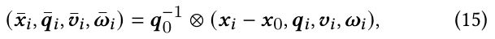
\(h_i\) is the height of each rigid body, and \(\mathbf{y}_0\) is the up axis of the root’s local coordinate frame. The rotations \(\mathbf{q}\) are represented in 6D representation [Zhou et al. 2019], which are commonly used in recent research on motion synthesis [Fussell et al. 2021; Lee et al. 2021]. They can be computed by extracting the first two columns of a rotation matrix.
\(h_i\) 是各刚体的高度，\(\mathbf{y}_0\) 是根节点局部坐标系的向上轴。旋转 \(\mathbf{q}\) 采用六维表示 [Zhou et al. 2019]，这种表示在近期动作合成研究中被广泛使用 [Fussell et al. 2021; Lee et al. 2021]。通过提取旋转矩阵的前两列即可计算得到这种表示。
With this state representation, the reconstruction loss of Equation (10) is implemented in practice using the 1-norm distance between two states as
采用这种状态表示后，式 (10) 中的重建损失在实际实现时使用两个状态之间的 1-范数距离，形式为
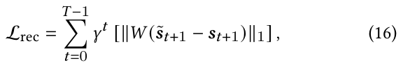
where \(W=\operatorname{diag}(w_{\bar{x}},w_{\bar{q}},w_{\bar{v}},w_{\bar{\omega}},w_h,w_y)\) is a diagonal weight matrix that balances the magnitude of each component.
其中，\(W=\operatorname{diag}(w_{\bar{x}},w_{\bar{q}},w_{\bar{v}},w_{\bar{\omega}},w_h,w_y)\) 是用于平衡各分量幅值的对角权重矩阵。
Action. We actuate our character using PD controllers. The action \(\mathbf{a}=\{\hat{\mathbf{q}}_j\},\ j\in J\) is thus a collection of target rotations of all the joints, where \(J\) stands for the set of joints. We use 3D axis angles to represent those target rotations.
动作。我们使用 PD 控制器驱动角色。因此，动作 \(\mathbf{a}=\{\hat{\mathbf{q}}_j\},\ j\in J\) 是所有关节目标旋转的集合，其中 \(J\) 表示关节集合。我们使用三维轴角表示这些目标旋转。
Latent. We employ a latent space \(\mathcal{Z}\) with dimension 64 to encode the motion skills. The means of the conditional prior \(p(\mathbf{z}_t\mid\mathbf{s}_t)\) and the approximate posterior \(q(\mathbf{z}_t\mid\mathbf{s}_t,\mathbf{s}_{t+1})\) of the latent variable are both modeled as neural networks with two 512-unit hidden layers and the ELU as the activation function. To emphasize the state information, we concatenate the input of each layer of the prior and posterior networks with \(\mathbf{s}_t\) and \(\mathbf{s}_{t+1}\), respectively. We use \(\sigma_{\mathbf{p}}=0.3\) as the standard deviation of these distributions.
潜变量。我们采用维度为 64 的潜空间 \(\mathcal{Z}\) 来编码动作技能。潜变量的条件先验 \(p(\mathbf{z}_t\mid\mathbf{s}_t)\) 和近似后验 \(q(\mathbf{z}_t\mid\mathbf{s}_t,\mathbf{s}_{t+1})\) 的均值均建模为神经网络，每个网络包含两个各有 512 个单元的隐藏层，并采用 ELU 作为激活函数。为强化状态信息，我们将先验网络和后验网络每一层的输入分别与 \(\mathbf{s}_t\) 和 \(\mathbf{s}_{t+1}\) 拼接。我们采用 \(\sigma_{\mathbf{p}}=0.3\) 作为这些分布的标准差。
Policy. The mean \(\boldsymbol{\mu}_{\pi}\) of the control policy \(\pi(\mathbf{a}\mid\mathbf{s},\mathbf{z})\) is modeled as a neural network. We employ a mixture-of-expert (MoE) structure similar to the decoder network of MotionVAE [Ling et al. 2020]. Specifically, we use six expert networks in this structure, each having three 512-unit hidden layers. The parameters of these experts are blended according to the weights computed by a gating network, which contains two 64-unit hidden layers. The ELU is used as the activation function for these networks. To ensure the effectiveness of the latent skill variable, \(\mathbf{z}\) is concatenated with the input of each layer of the experts, and layer normalization is applied to normalize these concatenated inputs. The covariance matrix \(\Sigma_{\pi}\) of the policy distribution is set as a diagonal matrix \(\sigma_{\pi}^2\mathbf{I}\), where \(\sigma_{\pi}=0.05\).
策略。控制策略 \(\pi(\mathbf{a}\mid\mathbf{s},\mathbf{z})\) 的均值 \(\boldsymbol{\mu}_{\pi}\) 被建模为神经网络。我们采用与 MotionVAE [Ling et al. 2020] 的解码器网络类似的混合专家（MoE）结构。具体而言，该结构使用六个专家网络，每个网络包含三个各有 512 个单元的隐藏层。这些专家的参数根据门控网络计算出的权重进行混合，门控网络包含两个各有 64 个单元的隐藏层。这些网络均使用 ELU 作为激活函数。为确保技能潜变量发挥有效作用，我们将 \(\mathbf{z}\) 与各专家网络每一层的输入拼接，并采用层归一化对拼接后的输入进行归一化。策略分布的协方差矩阵 \(\Sigma_{\pi}\) 设为对角矩阵 \(\sigma_{\pi}^2\mathbf{I}\)，其中 \(\sigma_{\pi}=0.05\)。
3.4.2 World Model. Our world model \(\omega(\mathbf{s}_{t+1}\mid\mathbf{s}_t,\mathbf{a}_t)\sim\mathcal{N}(\boldsymbol{\mu}_w,\boldsymbol{\Sigma}_w)\) is formulated and trained in the same way as SuperTrack [Fussell et al. 2021]. We use a neural network with four 512-unit hidden layers and ELU activation functions for the world model \(\boldsymbol{\mu}_w(\mathbf{s},\mathbf{a})\). The input to \(\boldsymbol{\mu}_w(\mathbf{s},\mathbf{a})\) is the state representation \(\mathbf{s}\) and the target joint rotations of the action \(\mathbf{a}\) converted into quaternions. The world model then predicts the change of the velocity and angular velocity of each rigid body, represented by \(d\bar{\mathbf{v}}_i\) and \(d\bar{\boldsymbol{\omega}}_i\), in the local coordinate frame of the root. Then, the character’s new state \(\mathbf{s}_{t+1}^*\) and thus \(\mathbf{s}_{t+1}\) are computed accordingly using the forward Euler method.
3.4.2 世界模型。我们的世界模型 \(\omega(\mathbf{s}_{t+1}\mid\mathbf{s}_t,\mathbf{a}_t)\sim\mathcal{N}(\boldsymbol{\mu}_w,\boldsymbol{\Sigma}_w)\) 采用与 SuperTrack [Fussell et al. 2021] 相同的方式构建和训练。对于世界模型 \(\boldsymbol{\mu}_w(\mathbf{s},\mathbf{a})\)，我们使用具有四个各含 512 个单元的隐藏层、以 ELU 为激活函数的神经网络。\(\boldsymbol{\mu}_w(\mathbf{s},\mathbf{a})\) 的输入为状态表示 \(\mathbf{s}\)，以及动作 \(\mathbf{a}\) 中转换为四元数的关节目标旋转。世界模型随后预测各刚体在根节点局部坐标系中的线速度和角速度变化，分别表示为 \(d\bar{\mathbf{v}}_i\) 和 \(d\bar{\boldsymbol{\omega}}_i\)。然后，利用前向欧拉法相应地计算角色的新状态 \(\mathbf{s}_{t+1}^*\)，进而得到 \(\mathbf{s}_{t+1}\)。
The objective function of Equation (14) is then implemented to penalize the prediction error in the global coordinate frame:
因此，式 (14) 中的目标函数在实现时用于惩罚全局坐标系中的预测误差：
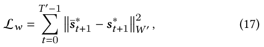
ACM Trans. Graph., Vol. 41, No. 6, Article 183. Publication date: December 2022.
ACM Trans. Graph.，第 41 卷，第 6 期，文章编号 183。出版日期：2022 年 12 月。
展开第 6 页原版整页（含全部图表、公式与页眉页脚）
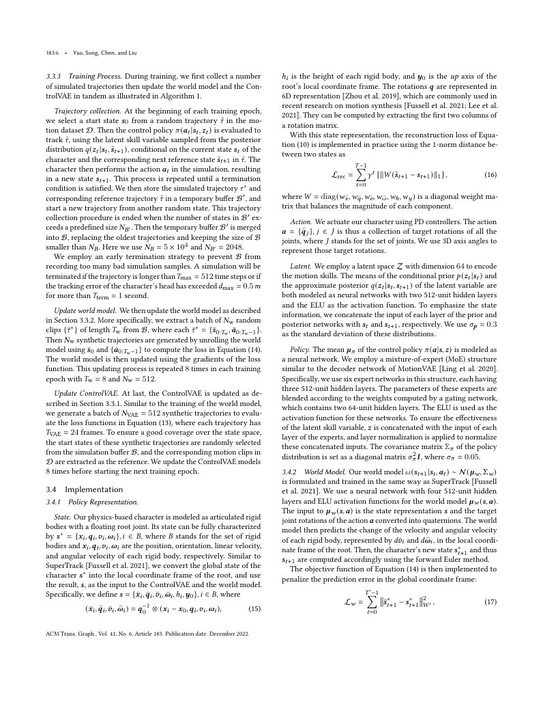
第 7 页Page 7PDF p.7
where the weight matrix \(W' = \operatorname{diag}(w_x,w_q,w_v,w_\omega)\) is chosen empirically to balance the magnitude of each component.
其中，权重矩阵 \(W' = \operatorname{diag}(w_x,w_q,w_v,w_\omega)\) 根据经验选取，以平衡各分量的量级。
Our experiments show that large randomness can negatively impact the stableness of the training process. In practice, we directly use the mean function \(\boldsymbol{\mu}_w\) to generate the synthetic rollouts instead of sampling from \(\mathcal{N}(\boldsymbol{\mu}_w,\boldsymbol{\Sigma}_w)\).
我们的实验表明，较大的随机性会对训练过程的稳定性产生负面影响。在实践中，我们直接使用均值函数 \(\boldsymbol{\mu}_w\) 生成合成轨迹展开，而不从 \(\mathcal{N}(\boldsymbol{\mu}_w,\boldsymbol{\Sigma}_w)\) 中采样。
3.4.3 Data Balancing. Our motion dataset \(\mathcal{D}\) consists of several unstructured long motion sequences of a diverse set of skills, including walking, running, jumping, turning, and more difficult skills such as getting up. During the trajectory collection process of the training, if we select the initial states uniformly from \(\mathcal{D}\), easy motions may often result in longer simulated trajectories and thus occupy the simulation buffer \(\mathcal{B}\), making the ControlVAE hard to learn difficult skills. To overcome this unbalancing problem, we calculate the value of each state and sample the initial states according to their values. The state with a lower value will have higher chance to be selected.
3.4.3 数据平衡。我们的动作数据集 \(\mathcal{D}\) 由若干非结构化的长动作序列组成，涵盖多种技能，包括行走、奔跑、跳跃、转向，以及起身等更困难的技能。在训练中的轨迹收集过程中，如果从 \(\mathcal{D}\) 中均匀选取初始状态，简单动作往往会产生较长的仿真轨迹，从而占据仿真缓冲区 \(\mathcal{B}\)，使 ControlVAE 难以学会困难技能。为解决这种不平衡问题，我们计算每个状态的价值，并根据其价值采样初始状态。价值较低的状态具有更高的被选中概率。
More specifically, we maintain a list \(\mathcal{V}=\{V_t\}\) of the values of every state in the dataset \(\mathcal{D}\), where all the \(V_t\) are initialized to zero. After every 200 epochs in the training, if a state with index \(t\) in \(\mathcal{D}\) is encountered in the collected simulated trajectories, we update the corresponding value \(V_t\) as
更具体地说，我们维护一个列表 \(\mathcal{V}=\{V_t\}\)，记录数据集 \(\mathcal{D}\) 中每个状态的价值，其中所有 \(V_t\) 均初始化为零。训练中每经过 200 个轮次，如果 \(\mathcal{D}\) 中索引为 \(t\) 的状态出现在已收集的仿真轨迹中，我们就按下式更新其对应的价值 \(V_t\)：
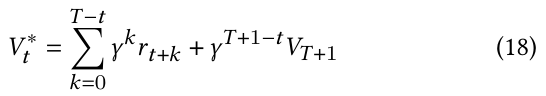
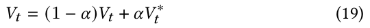
where \(r_{t+k}\) is the reward of state \(\mathbf{s}_{t+k}\) in the simulated trajectory, \(T\) is the length of the trajectory containing \(\mathbf{s}_t\), and the discount factor \(\gamma=0.95\). We compute the reward according to the reconstruction loss of Equation (16) as
其中，\(r_{t+k}\) 是仿真轨迹中状态 \(\mathbf{s}_{t+k}\) 的奖励，\(T\) 是包含 \(\mathbf{s}_t\) 的轨迹的长度，折扣因子 \(\gamma=0.95\)。我们根据式 (16) 中的重建损失，按下式计算奖励：
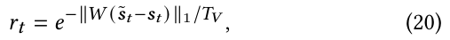
where the temperature \(T_V=20\). In the next 200 training epochs, the initial state will be selected based on the probability proportional to \(1/\max(0.01,V_t)\).
其中，温度参数 \(T_V=20\)。在接下来的 200 个训练轮次中，将以正比于 \(1/\max(0.01,V_t)\) 的概率选取初始状态。
3.4.4 Trajectory Sampler. At last, to encourage the policy to learn new transitions between different motions, we augment the trajectory collection process by switching the reference motion clip randomly during the simulation. The beginning state of the new motion clip is also selected using the above data balancing strategy. In practice, many of such switches will cause the character to fall due to mismatched poses and velocities, but the character can learn to recover from such falls automatically during the training.
3.4.4 轨迹采样器。最后，为鼓励策略学习不同动作之间的新过渡，我们在仿真过程中随机切换参考动作片段，以增强轨迹收集过程。新动作片段的起始状态也使用上述数据平衡策略选取。在实践中，许多此类切换会因姿态和速度不匹配而导致角色跌倒，但角色可以在训练过程中自动学会从此类跌倒中恢复。
To encourage the policy to embed diverse motion transitions into prior distribution \(p(\mathbf{z}\mid\mathbf{s})\), we further augment the trajectory collection process with states derived from the prior distribution. Specifically, the policy randomly chooses to sample latent codes from the posterior distribution \(q(\mathbf{z}_t\mid\mathbf{s}_t,\tilde{\mathbf{s}}_{t+1})\) or the prior distribution \(p(\mathbf{z}_t\mid\mathbf{s}_t)\). The probability of choosing the latter is empirically set to 0.4. In practice, the skill embeddings learned with this augmentation behave more actively and responsively in downstream tasks.
为鼓励策略将多样的动作过渡嵌入先验分布 \(p(\mathbf{z}\mid\mathbf{s})\)，我们进一步使用由先验分布产生的状态来增强轨迹收集过程。具体而言，策略随机选择从后验分布 \(q(\mathbf{z}_t\mid\mathbf{s}_t,\tilde{\mathbf{s}}_{t+1})\) 或先验分布 \(p(\mathbf{z}_t\mid\mathbf{s}_t)\) 中采样潜编码。选择后者的概率根据经验设为 0.4。在实践中，通过这种增强方式学得的技能嵌入在下游任务中表现得更为主动，响应也更加灵敏。
4 MODEL-BASED HIGH-LEVEL CONTROLLERS
4 基于模型的高层控制器
A learned ControlVAE provides a latent skill space \(\mathcal{Z}\) and a skill-conditional policy \(\pi(\mathbf{a}\mid\mathbf{s},\mathbf{z})\) that a high-level policy can leverage
训练好的 ControlVAE 提供了一个潜在技能空间 \(\mathcal{Z}\) 和一个以技能为条件的策略 \(\pi(\mathbf{a}\mid\mathbf{s},\mathbf{z})\)，高层策略可以利用它们
to accomplish various downstream tasks. Formally, the task policy \(\pi(\mathbf{z}\mid\mathbf{s},\mathbf{g})\) takes the character state \(\mathbf{s}\) and a task-specific parameter \(\mathbf{g}\) as input and computes a skill variable \(\mathbf{z}\). The skill policy \(\pi(\mathbf{a}\mid\mathbf{s},\mathbf{z})\) then uses \(\mathbf{z}\) to compute the action \(\mathbf{a}\) accordingly. The task policy can be trained using model-free reinforcement learning algorithms as suggested in previous systems [Ling et al. 2020; Luo et al. 2020; Merel et al. 2020; Peng et al. 2019]. However, the world model learned with ControlVAE further enables more efficient model-based learning for the downstream tasks.
来完成各种下游任务。形式化地，任务策略 \(\pi(\mathbf{z}\mid\mathbf{s},\mathbf{g})\) 以角色状态 \(\mathbf{s}\) 和任务特定参数 \(\mathbf{g}\) 为输入，计算技能变量 \(\mathbf{z}\)。随后，技能策略 \(\pi(\mathbf{a}\mid\mathbf{s},\mathbf{z})\) 利用 \(\mathbf{z}\) 计算相应的动作 \(\mathbf{a}\)。任务策略可以采用先前系统中提出的无模型强化学习算法进行训练 [Ling et al. 2020; Luo et al. 2020; Merel et al. 2020; Peng et al. 2019]。不过，随 ControlVAE 一同学得的世界模型进一步使下游任务能够采用更高效的基于模型的学习。
In this section, we introduce two model-based control strategies that can take advantage of the learned world model, as well as a corpus of locomotion tasks that can be accomplished using these controllers. Note that the parameters of the learned ControlVAE are frozen in this stage. Only the gradients are passed through the networks to optimize the downstream task policies. The character applies the learned policies in the true simulation and responds dynamically to user control and unexpected perturbations.
本节介绍两种能够利用所学世界模型的基于模型的控制策略，以及一组可由这些控制器完成的移动任务。注意，在此阶段，已训练好的 ControlVAE 的参数被冻结，仅允许梯度通过这些网络传播，以优化下游任务策略。角色在真实仿真中应用所学策略，并对用户控制和意外扰动作出动态响应。
4.1 Model Predictive Control
4.1 模型预测控制
The first control strategy is the sampling-based model predictive control (MPC). At each time step, we generate \(N_{\text{MPC}}\) synthetic Monte-Carlo rollouts \(\{\tau_i^{\mathbf{g}}=\{\mathbf{z}_t,\mathbf{a}_t,\mathbf{s}_t\}^{i}\}\) of a fixed planning horizon \(T_{\text{MPC}}\) using the world model, where the skill variables \(\mathbf{z}_t\) of these rollouts are sampled from the state-conditional prior distribution \(p(\mathbf{z}_t\mid\mathbf{s}_t)\) of the ControlVAE. We then evaluate each rollout with a task-specific loss function. The first action of the best trajectory will be used in the simulation. In practice, we find that \(N_{\text{MPC}}=128\) and \(T_{\text{MPC}}=4\) can achieve good performance in our experiments.
第一种控制策略是基于采样的模型预测控制（MPC）。在每个时间步，我们利用世界模型生成 \(N_{\text{MPC}}\) 条规划时域固定为 \(T_{\text{MPC}}\) 的合成蒙特卡洛轨迹展开 \(\{\tau_i^{\mathbf{g}}=\{\mathbf{z}_t,\mathbf{a}_t,\mathbf{s}_t\}^{i}\}\)，其中，这些轨迹展开中的技能变量 \(\mathbf{z}_t\) 从 ControlVAE 的状态条件先验分布 \(p(\mathbf{z}_t\mid\mathbf{s}_t)\) 中采样。随后，我们用任务特定的损失函数评估每条轨迹展开，并在仿真中执行最优轨迹的第一个动作。在实践中，我们发现，\(N_{\text{MPC}}=128\) 和 \(T_{\text{MPC}}=4\) 在实验中能够取得良好的性能。
4.2 Model-based Learning of Task Policies
4.2 任务策略的基于模型的学习
Our ControlVAE allows fast model-based policy training for downstream tasks based on the world model. Specifically, we assume that the task policy \(\pi(\mathbf{z}_t\mid\mathbf{s}_t,\mathbf{g})\) has the same structure as the approximate posterior distribution \(q(\mathbf{z}_t\mid\mathbf{s}_t,\mathbf{s}_{t+1})\) of ControlVAE, which is again a Gaussian distribution \(\mathcal{N}(\hat{\boldsymbol{\mu}}_g,\sigma_g^2\mathbf{I})\) with a diagonal covariance \(\sigma_g=\sigma_q\) and the mean function computed as
我们的 ControlVAE 能够依托世界模型，为下游任务快速开展基于模型的策略训练。具体而言，我们假设任务策略 \(\pi(\mathbf{z}_t\mid\mathbf{s}_t,\mathbf{g})\) 与 ControlVAE 的近似后验分布 \(q(\mathbf{z}_t\mid\mathbf{s}_t,\mathbf{s}_{t+1})\) 具有相同结构，同样采用高斯分布 \(\mathcal{N}(\hat{\boldsymbol{\mu}}_g,\sigma_g^2\mathbf{I})\)，其协方差为对角形式，\(\sigma_g=\sigma_q\)，均值函数计算如下：
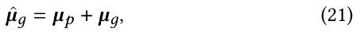
where \(\boldsymbol{\mu}_g=\boldsymbol{\mu}_g(\mathbf{s},\mathbf{g};\theta_g)\) is a neural network parameterized by \(\theta_g\). During the training, we generate a batch of \(N_{\text{ML}}=256\) synthetic rollouts \(\{\tau_i^{\mathbf{g}}\}\) for a fixed horizon \(T_{\text{ML}}=16\) and update the policy \(\boldsymbol{\mu}_g\) by minimizing the task-specific loss function. The reparameterization trick is also applied in this process to ensure the backpropagation of the gradients to the policy.
其中，\(\boldsymbol{\mu}_g=\boldsymbol{\mu}_g(\mathbf{s},\mathbf{g};\theta_g)\) 是由 \(\theta_g\) 参数化的神经网络。训练时，我们生成一批 \(N_{\text{ML}}=256\) 条时域固定为 \(T_{\text{ML}}=16\) 的合成轨迹展开 \(\{\tau_i^{\mathbf{g}}\}\)，并通过最小化任务特定的损失函数来更新策略 \(\boldsymbol{\mu}_g\)。在此过程中，我们也采用重参数化技巧，以确保梯度能够反向传播至策略。
To generate the initial states for synthesizing these rollouts, we apply the current task policy in the simulated environment with the corresponding goal parameters \(\mathbf{g}\) changing randomly every 72 steps. These simulated states and goal parameters are then stored in a buffer \(\mathcal{B}_{\mathbf{g}}\) with size 4096. During the training, a synthetic rollout is generated by sampling an initial state \(\mathbf{s}_0\) from \(\mathcal{B}_{\mathbf{g}}\) and executing the task policy using the recorded sequence of task parameters \(\{\mathbf{g}_t\}\) following \(\mathbf{s}_0\).
为生成用于合成这些轨迹展开的初始状态，我们在仿真环境中执行当前任务策略，并每隔 72 步随机改变相应的目标参数 \(\mathbf{g}\)。随后，将这些仿真状态和目标参数存入容量为 4096 的缓冲区 \(\mathcal{B}_{\mathbf{g}}\)。训练时，从 \(\mathcal{B}_{\mathbf{g}}\) 中采样初始状态 \(\mathbf{s}_0\)，并使用记录的、在 \(\mathbf{s}_0\) 之后的任务参数序列 \(\{\mathbf{g}_t\}\) 执行任务策略，从而生成一条合成轨迹展开。
4.3 Tasks
4.3 任务
In this section, we introduce a corpus of locomotion tasks that can be accomplished by the above model-based control strategies.
本节介绍一组可以通过上述基于模型的控制策略完成的移动任务。
ACM Trans. Graph., Vol. 41, No. 6, Article 183. Publication date: December 2022.
ACM Trans. Graph.，第 41 卷，第 6 期，文章 183。出版日期：2022 年 12 月。
展开第 7 页原版整页（含全部图表、公式与页眉页脚）
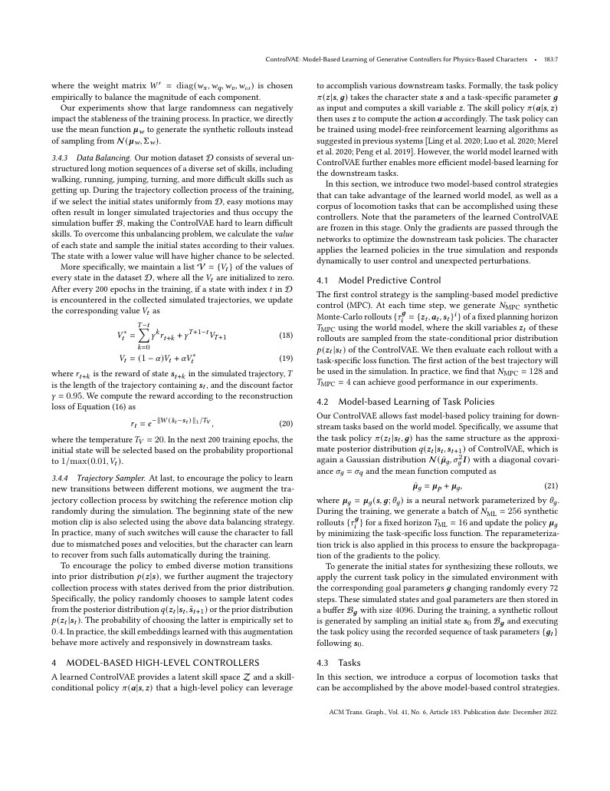
第 8 页Page 8PDF p.8
We formulate these tasks as a set of loss functions computed over each of the generated trajectories \(\tau^{\mathbf{g}}\). Using the skill embeddings learned in ControlVAE, the corresponding task policies can generate natural motions to complete these tasks in simulation and respond to unexpected perturbations.
我们将这些任务表述为一组在每条生成轨迹 \(\tau^{\mathbf{g}}\) 上计算的损失函数。利用 ControlVAE 学得的技能嵌入，相应的任务策略能够生成自然动作，在仿真中完成这些任务，并对意外扰动作出响应。
Unless otherwise stated, all our loss functions have the form
除非另有说明，我们的所有损失函数均采用以下形式：
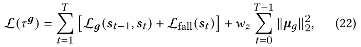
where \(\mathcal{L}_{\mathbf{g}}\) stands for the task-specific loss computed using the current state \(\mathbf{s}_t\) and optionally the previous state \(\mathbf{s}_{t-1}\), and \(\mathcal{L}_{\text{fall}}(\mathbf{s}_t)\) penalizes potential falling as
其中，\(\mathcal{L}_{\mathbf{g}}\) 表示利用当前状态 \(\mathbf{s}_t\) 以及可选的前一状态 \(\mathbf{s}_{t-1}\) 计算的任务特定损失，\(\mathcal{L}_{\text{fall}}(\mathbf{s}_t)\) 则按下式惩罚潜在的跌倒：
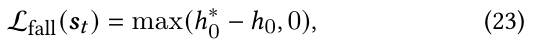
where \(h_0\) is the height of the character’s root, \(h_0^*=0.5\,\mathrm{m}\) is a falling threshold. The last term of Equation (22) is a regularization term that encourages the high-level policy to stay close to the prior distribution. We find this term crucial to a stable and successful training. \(w_z=20\) works for all our experiments.
其中，\(h_0\) 是角色根节点的高度，\(h_0^*=0.5\,\mathrm{m}\) 是跌倒阈值。式 (22) 的最后一项是正则化项，用于鼓励高层策略保持接近先验分布。我们发现，该项对训练的稳定性和成功至关重要。\(w_z=20\) 适用于我们的所有实验。
Height control. We define a simple loss to control the height of the character as
高度控制。我们定义一个简单的损失来控制角色高度，如下所示：
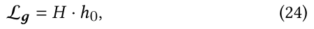
where \(h_0\) represents the current height of the character’s root joint. The task parameter \(H\in\{-1,1\}\) indicates the desired motion for the character, where \(H=-1\) encourages the character to squat down and eventually lie on the ground and \(H=1\) will let the character get up and jump when possible to maintain a high root position.
其中，\(h_0\) 表示角色根关节的当前高度。任务参数 \(H\in\{-1,1\}\) 指示角色的期望动作，其中，\(H=-1\) 鼓励角色蹲下并最终躺在地面上，而 \(H=1\) 则使角色起身，并在可能时跳跃，以保持较高的根节点位置。
Heading control. In the heading control task, the character needs to travel while heading towards a target direction \(\theta_h^*\in[-\pi,\pi]\) at a given speed \(v^*\in[0.0,3.0]\,\mathrm{m}/\mathrm{s}\) along that direction. The loss function is thus defined as
朝向控制。在朝向控制任务中，角色需要面向目标方向 \(\theta_h^*\in[-\pi,\pi]\)，并沿该方向以给定速度 \(v^*\in[0.0,3.0]\,\mathrm{m}/\mathrm{s}\) 行进。因此，损失函数定义为：
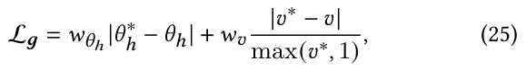
where \(\theta_h\) and \(v\) are the character’s current heading direction and speed. We compute \(\theta_h\) according to the orientation of the character’s root and \(v\) as the component of the root’s velocity along this direction. The weights are set to \((w_{\theta_h},w_v)=(2.0,1.0)\) for this task. Note that we normalize the speed loss according to the target speed to encourage the training to pay attention to these low-speed motions.
其中，\(\theta_h\) 和 \(v\) 分别是角色当前的朝向和速度。我们根据角色根节点的朝向计算 \(\theta_h\)，并将根节点速度在该方向上的分量作为 \(v\)。该任务的权重设为 \((w_{\theta_h},w_v)=(2.0,1.0)\)。注意，我们根据目标速度对速度损失进行归一化，以促使训练关注这些低速动作。
Steering control. The objective of the steering task is to control both the heading direction \(\theta_h\) and the travel direction \(\theta_v\) simultaneously. Specifically, we define the loss function as
转向控制。转向任务的目标是同时控制朝向 \(\theta_h\) 和行进方向 \(\theta_v\)。具体而言，我们将损失函数定义为：
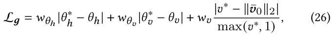
where \(\bar{\mathbf{v}}_0\) represents planar components of the root’s linear velocity \(\mathbf{v}_0\) and \(\theta_v\) is its directional angle, computed as the angle between \(\bar{\mathbf{v}}_0\) and the x-axis of the global coordinate frame. The weights are set similarly as \((w_{\theta_h},w_{\theta_v},w_v)=(2.0,2.0,1.0)\) for this task.
其中，\(\bar{\mathbf{v}}_0\) 表示根节点线速度 \(\mathbf{v}_0\) 的平面分量，\(\theta_v\) 是其方向角，计算为 \(\bar{\mathbf{v}}_0\) 与全局坐标系 x 轴之间的夹角。类似地，该任务的权重设为 \((w_{\theta_h},w_{\theta_v},w_v)=(2.0,2.0,1.0)\)。
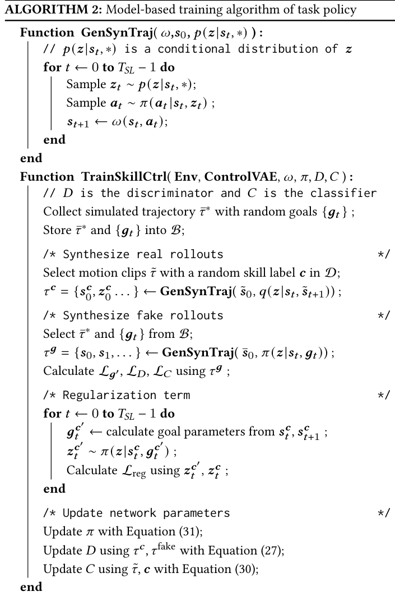
Skill control. The objective of the skill control is to let the character use a specific skill to accomplish a given task, such as responding to steering control while jumping or hopping. In this task, a skill is specified using a 4-second motion clip manually selected from the dataset. We have selected 5 skills for this task, including walking, running, hopping, jumping, and skipping, as shown in Figure 11. The task parameter \(\mathbf{c}\) is thus defined as a one-hot vector indicating the index of the skill.
技能控制。技能控制的目标是让角色使用特定技能完成给定任务，例如在跳跃或单脚跳时响应转向控制。在该任务中，使用从数据集中手动选取的一个 4 秒动作片段来指定技能。我们为该任务选取了 5 种技能，包括行走、奔跑、单脚跳、跳跃和交替蹦跳，如图 11 所示。因此，任务参数 \(\mathbf{c}\) 被定义为表示技能索引的独热向量。
Unfortunately, we do not yet have a direct mapping between a specific skill \(\mathbf{c}\) and its corresponding latent code \(\mathbf{z}\), so that the character has to figure out by itself whether it is performing the correct skill corresponding to the reference motion clip. Inspired by AMP [Peng et al. 2021], which learns an adversarial discriminator to enforce a specific motion style in reinforcement learning, we employ a similar discriminator in our model-based learning process that penalizes incorrect motions as an adversarial loss function.
遗憾的是，我们尚未建立特定技能 \(\mathbf{c}\) 与其对应潜编码 \(\mathbf{z}\) 之间的直接映射，因此角色必须自行判断其执行的是否为参考动作片段所对应的正确技能。AMP [Peng et al. 2021] 通过学习一个对抗判别器，在强化学习中约束角色采用特定的动作风格；受其启发，我们在基于模型的学习过程中采用类似的判别器，并将其作为对抗损失函数来惩罚不正确的动作。
More specifically, we train the task-specific control policy to mimic the behavior of a tracking policy characterized by the approximate posterior \(q(\mathbf{z}_t\mid\mathbf{s}_t,\mathbf{s}_{t+1})\), as illustrated in Algorithm 2. In each training iteration, we first generate a batch of control rollouts \(\{\tau^{\mathbf{g}}\}\) as described in Section 4.2, where each \(\tau^{\mathbf{g}}\) is conditioned on a skill
更具体地说，我们训练任务特定的控制策略，使其模仿由近似后验 \(q(\mathbf{z}_t\mid\mathbf{s}_t,\mathbf{s}_{t+1})\) 描述的跟踪策略的行为，如算法 2 所示。在每次训练迭代中，我们首先按照第 4.2 节所述生成一批控制轨迹展开 \(\{\tau^{\mathbf{g}}\}\)，其中每条 \(\tau^{\mathbf{g}}\) 所依赖的条件是一个技能
ACM Trans. Graph., Vol. 41, No. 6, Article 183. Publication date: December 2022.
ACM Trans. Graph.，第 41 卷，第 6 期，文章 183。出版日期：2022 年 12 月。
展开第 8 页原版整页（含全部图表、公式与页眉页脚）
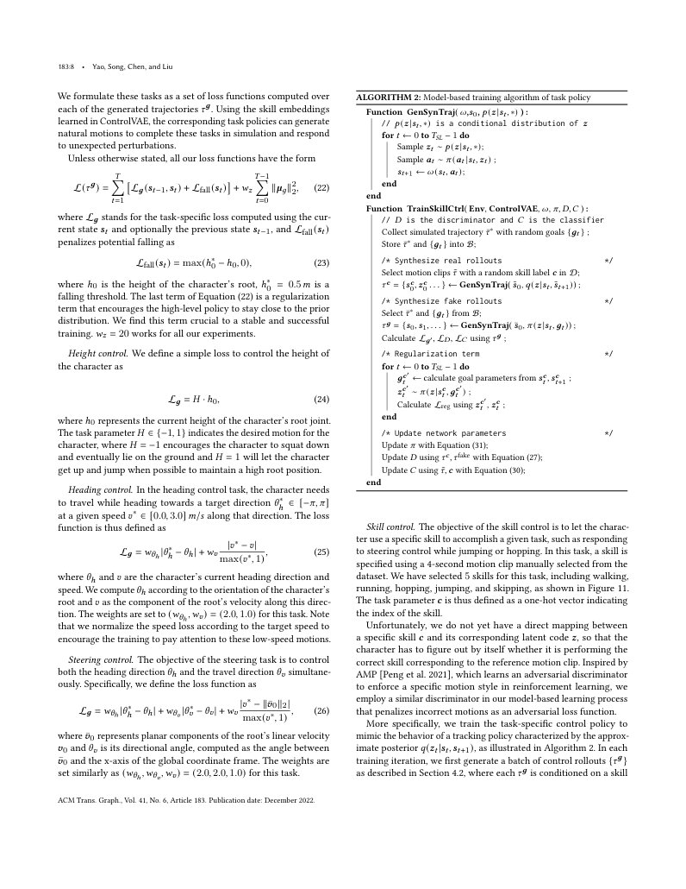
第 9 页Page 9PDF p.9
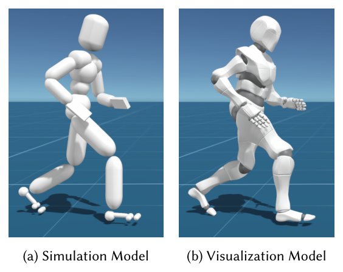
Fig. 3. The character model used in this paper.
图 3. 本文使用的角色模型。
vector \(\boldsymbol{c}\). Then, for each \(\tau^{\boldsymbol{g}}\), we extract a short random reference clip with the same length from the reference motion of skill \(\boldsymbol{c}\). By tracking this short reference clip using the approximate posterior \(q(\boldsymbol{z}_t\mid\boldsymbol{s}_t,\boldsymbol{\tilde{s}}_{t+1})\), where \(\boldsymbol{s}_t\) is the generated state and \(\boldsymbol{\tilde{s}}_{t+1}\) is from the reference clip, we obtain a tracking rollout \(\tau^{\boldsymbol{c}}\). We then consider \(\{\tau^{\boldsymbol{c}}\}\) as the real data samples and the control rollouts \(\{\tau^{\boldsymbol{g}}\}\) as the fake data samples and employ a discriminator \(D\) to distinguish between them. Following Peng et al. [2021], we adapt a least-squares GAN [Mao et al. 2017] in this training. The adversarial loss for the discriminator \(D\) is defined as
向量 \(\boldsymbol{c}\)。然后，对于每条 \(\tau^{\boldsymbol{g}}\)，我们从技能 \(\boldsymbol{c}\) 的参考动作中随机提取一个等长的短参考片段。使用近似后验 \(q(\boldsymbol{z}_t\mid\boldsymbol{s}_t,\boldsymbol{\tilde{s}}_{t+1})\) 跟踪这一短参考片段，即可得到跟踪轨迹展开 \(\tau^{\boldsymbol{c}}\)，其中 \(\boldsymbol{s}_t\) 是生成的状态，\(\boldsymbol{\tilde{s}}_{t+1}\) 来自参考片段。随后，我们将 \(\{\tau^{\boldsymbol{c}}\}\) 视为真实数据样本，将控制轨迹展开 \(\{\tau^{\boldsymbol{g}}\}\) 视为伪造数据样本，并使用判别器 \(D\) 区分二者。遵循 Peng et al. [2021]，我们在训练中采用经适配的最小二乘 GAN [Mao et al. 2017]。判别器 \(D\) 的对抗损失定义为
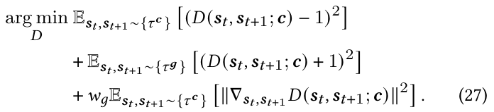
Note that the discriminator \(D\) is also conditioned on the skill vector \(\boldsymbol{c}\). The last term of the above equation regularizes the gradient of the discriminator with respect to the real data samples, which allows a more stable training [Peng et al. 2021]. We set its weight \(w_g=20\).
注意，判别器 \(D\) 也以技能向量 \(\boldsymbol{c}\) 为条件。上式的最后一项对判别器相对于真实数据样本的梯度进行正则化，从而使训练更加稳定 [Peng et al. 2021]。我们将其权重设为 \(w_g=20\)。
The objective of the character is now to complete a target task, e.g. heading control, while behaving indistinguishably from the reference motion. This can be achieved using the adversarial loss
此时，角色的目标是在完成目标任务（例如朝向控制）的同时，使其行为与参考动作无法区分。这可以通过以下对抗损失实现
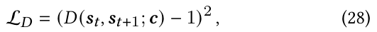
where \(\boldsymbol{s}_t,\boldsymbol{s}_{t+1}\sim\{\tau^{\boldsymbol{g}}\}\).
其中，\(\boldsymbol{s}_t,\boldsymbol{s}_{t+1}\sim\{\tau^{\boldsymbol{g}}\}\)。
To further facilitate the character to perform the correct skill in the skill set, we train a separate skill classifier \(C\) to predict the possibility that a state transition \((\boldsymbol{s}_t,\boldsymbol{s}_{t+1})\) belongs to a specific skill \(\boldsymbol{c}\). It is trained with the transitions in the real data samples \(\{\tau^{\boldsymbol{c}}\}\)
为进一步促使角色执行技能集合中的正确技能，我们训练一个独立的技能分类器 \(C\)，预测状态转移 \((\boldsymbol{s}_t,\boldsymbol{s}_{t+1})\) 属于特定技能 \(\boldsymbol{c}\) 的概率。该分类器使用真实数据样本 \(\{\tau^{\boldsymbol{c}}\}\) 中的状态转移进行训练
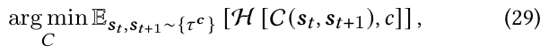
where \(\mathcal{H}\) is the cross-entropy loss. Then, we add a classifier loss
其中，\(\mathcal{H}\) 为交叉熵损失。随后，我们将一个分类器损失
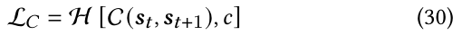
to the task’s loss function, where again \(\boldsymbol{s}_t,\boldsymbol{s}_{t+1}\sim\{\tau^{\boldsymbol{g}}\}\). The final loss function for the style control is defined as
加入任务的损失函数，其中同样有 \(\boldsymbol{s}_t,\boldsymbol{s}_{t+1}\sim\{\tau^{\boldsymbol{g}}\}\)。风格控制的最终损失函数定义为
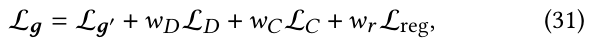
where \(\mathcal{L}_{\boldsymbol{g}'}\) is the loss function of the target task. The last term of Equation (31), \(\mathcal{L}_{\text{reg}}\), is a regularization term inspired by [Luo
其中，\(\mathcal{L}_{\boldsymbol{g}'}\) 为目标任务的损失函数。式 (31) 的最后一项 \(\mathcal{L}_{\text{reg}}\) 是一个正则化项，其灵感来自 [Luo
Table 1. Length of each motion after resampling
表 1. 重采样后各动作序列的长度
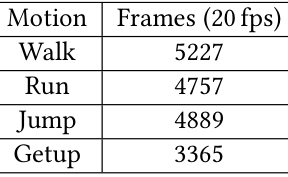
et al. 2020]. It considers the result of synthetically tracking the reference clip \(\tau^{\boldsymbol{c}}\) of skill \(\boldsymbol{c}\) as the output of a perfect policy finishing the task specified by \(\tau^{\boldsymbol{c}}\) itself. The task policy being trained thus need to clone the behavior of this perfect policy. To achieve this, we extract the task parameters \(\{\boldsymbol{g}_t^{\boldsymbol{c}'}\}\) from \(\tau^{\boldsymbol{c}}\) and assume that the posterior \(\boldsymbol{z}_t^{\boldsymbol{c}}\sim q(\boldsymbol{z}_t\mid\boldsymbol{s}_t,\boldsymbol{\tilde{s}}_{t+1})\) is the output of the perfect policy. The regularization term is then defined as
et al. 2020]。它将对技能 \(\boldsymbol{c}\) 的参考片段 \(\tau^{\boldsymbol{c}}\) 进行合成跟踪所得到的结果，视为一个完美策略的输出，该策略完成的任务由 \(\tau^{\boldsymbol{c}}\) 本身指定。因此，正在训练的任务策略需要克隆这一完美策略的行为。为此，我们从 \(\tau^{\boldsymbol{c}}\) 中提取任务参数 \(\{\boldsymbol{g}_t^{\boldsymbol{c}'}\}\)，并假设后验 \(\boldsymbol{z}_t^{\boldsymbol{c}}\sim q(\boldsymbol{z}_t\mid\boldsymbol{s}_t,\boldsymbol{\tilde{s}}_{t+1})\) 是该完美策略的输出。于是，正则化项定义为
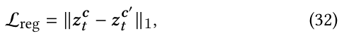
where \(\boldsymbol{z}_t^{\boldsymbol{c}'}\sim\pi(\boldsymbol{z}\mid\boldsymbol{s}_t,\boldsymbol{g}_t^{\boldsymbol{c}'})\) is the prediction of the current task policy for the task. This term is crucial to maintain a stable training in practice. We use \((w_D,w_C,w_r)=(5.0,0.5,10.0)\) in our experiments.
其中，\(\boldsymbol{z}_t^{\boldsymbol{c}'}\sim\pi(\boldsymbol{z}\mid\boldsymbol{s}_t,\boldsymbol{g}_t^{\boldsymbol{c}'})\) 是当前任务策略对该任务的预测。在实践中，这一项对于保持训练稳定至关重要。实验中，我们使用 \((w_D,w_C,w_r)=(5.0,0.5,10.0)\)。
5 RESULTS
5 结果
5.1 System Setup
5.1 系统设置
As shown in Figure 3, we simulate a character model that is 1.6 m tall, weighs 49.5 kg, and consists of 20 rigid bodies. A uniform set of PD control parameters \((k_p,k_d)=(400,50)\) is used for all the joints, except for the toe joints \((10,1)\) and the wrist joints \((5,1)\). The character is simulated using the Open Dynamics Engine (ODE) at 120 Hz. The stable-PD mechanism [Liu et al. 2013; Tan et al. 2011] is implemented to ensure a stable simulation with the large timestep.
如图 3 所示，我们仿真的角色模型身高 1.6 m、体重 49.5 kg，由 20 个刚体组成。所有关节均使用统一的 PD 控制参数 \((k_p,k_d)=(400,50)\)，但脚趾关节和腕关节除外，它们的参数分别为 \((10,1)\) 和 \((5,1)\)。角色使用 Open Dynamics Engine（ODE）以 120 Hz 的频率进行仿真。我们实现了 stable-PD 机制 [Liu et al. 2013; Tan et al. 2011]，以确保在较大时间步长下仿真仍保持稳定。
Our system executes ControlVAE, the world model, and all the task-specific policies at 20 Hz. It is lower than the simulation frequency, thus the same action is used in the simulation until the control policies are evaluated next time. ControlVAE assumes no knowledge about the simulation. It extracts the position and orientation of each rigid body from the physics engine and computes the corresponding velocities and angular velocities using finite difference. We implement and train the ControlVAE using PyTorch [Paszke et al. 2019]. Once trained, the entire system runs faster than real-time on a desktop, allowing interactive control of the simulated character.
我们的系统以 20 Hz 的频率执行 ControlVAE、世界模型以及所有任务专用策略。该频率低于仿真频率，因此在下一次计算控制策略之前，仿真始终使用同一动作。ControlVAE 不假定拥有任何关于仿真的先验知识。它从物理引擎中提取各刚体的位置和朝向，并通过有限差分计算相应的线速度和角速度。我们使用 PyTorch [Paszke et al. 2019] 实现并训练 ControlVAE。训练完成后，整个系统可在台式计算机上以超过实时的速度运行，从而实现对仿真角色的交互式控制。
5.2 ControlVAE training
5.2 ControlVAE 训练
We train our ControlVAE on an unstructured motion capture dataset consisting of four long motion sequences selected from the open-source LaFAN dataset [Harvey et al. 2020] as shown in Table 1. This dataset contains a diverse range of motions, including walking, running, turning, hopping, jumping, skipping, falling, and getting up. The motion sequences are downsampled to 20 fps and augmented with their mirrored sequences, resulting in an augmented dataset with approximately 30 minutes high-quality motion.
我们在一个非结构化动作捕捉数据集上训练 ControlVAE，该数据集由从开源 LaFAN 数据集 [Harvey et al. 2020] 中选取的四段长动作序列组成，如表 1 所示。该数据集包含多种动作，包括行走、跑步、转向、单脚跳、跳跃、蹦跳、跌倒和起身。我们将动作序列下采样至 20 fps，并使用其镜像序列进行数据增强，得到一个包含约 30 分钟高质量动作的增强数据集。
We train the ControlVAE models using the RAdam [Liu et al. 2020] optimizer with \(\beta_1=0.9\), \(\beta_2=0.999\), and the learning rates of policy and world model are (1e-5, 2e-3). Following the standard technique for achieving a robust training, the gradient norms are
我们使用 RAdam [Liu et al. 2020] 优化器训练 ControlVAE 模型，其中 \(\beta_1=0.9\)、\(\beta_2=0.999\)，策略和世界模型的学习率分别为 (1e-5, 2e-3)。遵循实现稳健训练的标准技术，梯度范数被
ACM Trans. Graph., Vol. 41, No. 6, Article 183. Publication date: December 2022.
ACM Trans. Graph.，第 41 卷，第 6 期，文章编号 183。出版日期：2022 年 12 月。
展开第 9 页原版整页（含全部图表、公式与页眉页脚）
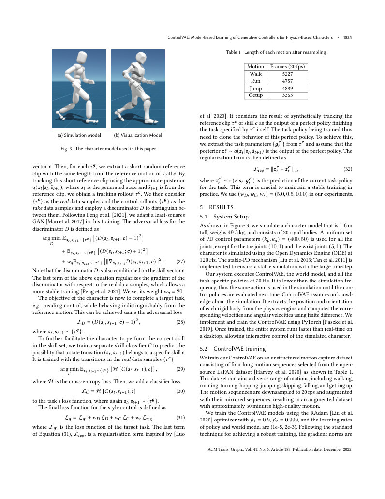
第 10 页Page 10PDF p.10
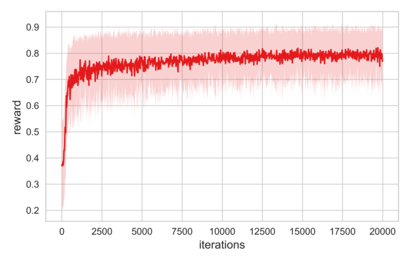
Fig. 4. A typical learning curve of ControlVAE.
图 4. ControlVAE 的典型学习曲线。
clipped between \([-1,1]\). Figure 4 shows a typical learning curve of ControlVAE, where the reward is calculated using Equation 20 on the simulated trajectories collected during the training. The training process begins to converge after about 10,000 iterations, and the motion quality keeps improving in the following training. Our full training takes 20,000 iterations and about 50 hours with four parallel working threads on an Intel Xeon Gold 6240 @ 2.60GHz CPU and one NVIDIA GTX 2080Ti graphics card.
裁剪到 \([-1,1]\) 之间。图 4 展示了 ControlVAE 的典型学习曲线，其中奖励通过式 20 在训练期间收集的仿真轨迹上计算得到。训练过程在约 10,000 次迭代后开始收敛，动作质量在后续训练中持续提高。我们的完整训练需要 20,000 次迭代，在 Intel Xeon Gold 6240 @ 2.60GHz CPU 和一块 NVIDIA GTX 2080Ti 显卡上使用四个并行工作线程，耗时约 50 小时。
5.3 Evaluation
5.3 评估
We evaluate the effectiveness of a learned ControlVAE using two simple tasks.
我们使用两个简单任务评估训练所得 ControlVAE 的有效性。
Reconstruction. To show that the ControlVAE has the same ability as other autoencoders in reconstructing an input motion, we use the learned approximate posterior \(q(\boldsymbol{z}_t\mid\boldsymbol{s}_t,\boldsymbol{s}_{t+1})\) as a tracking control and let ControlVAE to track motion sequences randomly chosen from the dataset. The character performs the input motion accurately in the simulation, and when another random clip is given, it automatically performs a smooth transition and then tracks the target motion again. In some extreme cases where the difference between current state and target motion is too large, the character may fall on the ground. It then automatically discovers a recovery strategy to get up, which is not included in the dataset.
重建。为展示 ControlVAE 与其他自编码器一样具备重建输入动作的能力，我们使用学习得到的近似后验 \(q(\boldsymbol{z}_t\mid\boldsymbol{s}_t,\boldsymbol{s}_{t+1})\) 进行跟踪控制，让 ControlVAE 跟踪从数据集中随机选取的动作序列。角色能够在仿真中准确执行输入动作；当给定另一个随机片段时，它会自动平滑过渡，然后继续跟踪目标动作。在某些极端情况下，当前状态与目标动作之间的差异过大，角色可能跌倒在地。随后，它会自动找到一种数据集中未包含的恢复策略，使自己重新站起。
Random sampling. The ControlVAE learns a generative control policy \(\pi(\boldsymbol{a}\mid\boldsymbol{s},\boldsymbol{z})\) conditional on the latent skill variable \(\boldsymbol{z}\), which allows us to generate a diverse range of behaviors even by drawing random samples in the latent space \(\mathcal{Z}\). Specifically, given a random initial state, we draw samples from the state-conditional prior distribution \(p(\boldsymbol{z}\mid\boldsymbol{s})\) at every control step. The simulated character then performs random skills smoothly, such as stopping and then starting to walk, taking random turns, hopping and skipping for a short period, etc. Figure 5 shows the root trajectories of several sample trajectories, where the character starts from a random state and performs random actions for 200 control steps, or 10 seconds. It can be seen that our ControlVAE generates a diverse range of motions in this random walk test.
随机采样。ControlVAE 学习以潜在技能变量 \(\boldsymbol{z}\) 为条件的生成式控制策略 \(\pi(\boldsymbol{a}\mid\boldsymbol{s},\boldsymbol{z})\)，因此，即使仅在潜空间 \(\mathcal{Z}\) 中随机采样，也能生成丰富多样的行为。具体而言，给定一个随机初始状态，我们在每个控制步从状态条件先验分布 \(p(\boldsymbol{z}\mid\boldsymbol{s})\) 中采样。仿真角色随后便能流畅地执行随机技能，例如停下后开始行走、随机转向、短时间单脚跳和蹦跳等。图 5 展示了若干采样轨迹的根节点轨迹，其中角色从随机状态出发，执行随机动作，持续 200 个控制步，即 10 秒。可以看出，我们的 ControlVAE 在这一随机游走测试中生成了丰富多样的动作。
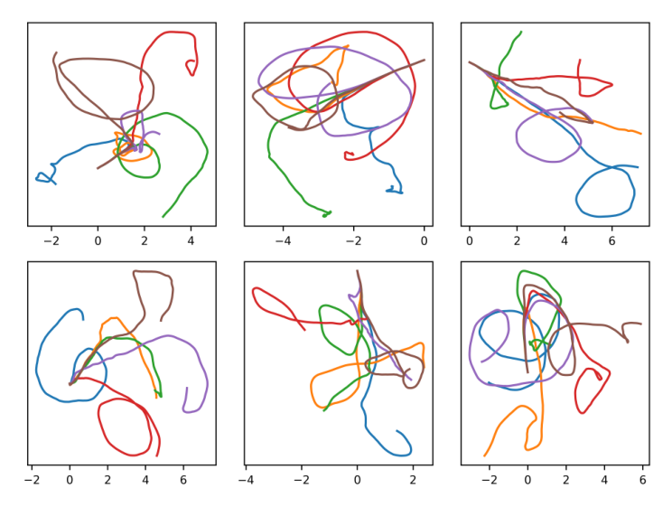
Fig. 5. Visualization of the random trajectories generated in the random sampling experiment, showing the planar positions of the character. These trajectories are generated by drawing random latent codes from the prior distribution of a learned ControlVAE model. Starting from the same initial states, the simulated character moves towards different directions while performing realistic motions.
图 5. 随机采样实验中生成的随机轨迹的可视化，展示了角色在平面上的位置。这些轨迹通过从训练所得 ControlVAE 模型的先验分布中随机采样潜编码而生成。从相同初始状态出发，仿真角色在执行逼真动作的同时向不同方向移动。
5.4 Model Predictive Control
5.4 模型预测控制
We test our MPC strategy on the height and heading control tasks. With interactive user input, the character lies down, gets up, and moves toward the target direction. The MPC policy can achieve real-time performance on the multicore computer we used to train ControlVAE with an NVIDIA GTX 2080Ti graphics card. Due to the limited number of samples, our sampling-based MPC cannot guarantee smooth and accurate results, but the resulting motions are generally acceptable. In practice, MPC can be used as an experimental tool to test our training settings, for example, to see whether a loss function is suitable for the task.
我们在高度控制和朝向控制任务上测试 MPC 策略。通过用户的交互式输入，角色可以躺下、起身，并朝目标方向移动。在用于训练 ControlVAE、配备 NVIDIA GTX 2080Ti 显卡的多核计算机上，MPC 策略能够实时运行。由于样本数量有限，我们基于采样的 MPC 无法保证结果既平滑又准确，但生成的动作总体上可以接受。在实践中，MPC 可用作检验训练设置的实验工具，例如检验某个损失函数是否适合该任务。
5.5 Model-based Training
5.5 基于模型的训练
Training settings. We model the task policy \(\boldsymbol{\mu}_g\) using a neural network with three hidden layers, each having 256 units for heading control task and 512 for all other tasks. We use the RAdam [Liu et al. 2020] optimizer with the learning rate decaying exponentially as \(0.001*\max(0.99^{\text{iteration}},0.1)\). We find this exponentially decaying learning rate improves the stability of the training process.
训练设置。我们使用具有三个隐藏层的神经网络建模任务策略 \(\boldsymbol{\mu}_g\)。对于朝向控制任务，每个隐藏层包含 256 个单元；对于所有其他任务，每层包含 512 个单元。我们采用 RAdam [Liu et al. 2020] 优化器，学习率按 \(0.001*\max(0.99^{\text{iteration}},0.1)\) 指数衰减。我们发现，这种指数衰减的学习率提高了训练过程的稳定性。
Heading control. In this task, our character is able to move and respond to user input such as changing the moving direction and speed. It automatically transits between different skills to achieve the target direction and speed (see Figure 10(b)). It is also capable of resisting external perturbation or recovering from tumbling when moving (see Figure 10(f) and 10(g)). Figure 6 shows the response of the character to a speed change. We can see that our character reacts quickly to adapt to the speed change and stops at last as the final target speed is zero.
朝向控制。在这一任务中，角色能够移动并响应用户输入，例如改变移动方向和速度。它会在不同技能之间自动切换，以达到目标方向和速度（见图 10(b)）。它还能够在移动时抵抗外部扰动，或在跌倒翻滚后恢复（见图 10(f) 和 10(g)）。图 6 展示了角色对速度变化的响应。可以看出，角色能够迅速作出反应，适应速度变化，并在最终目标速度为零时停下。
Figure 10(a) shows a derived task of going towards a target location. We achieve this by computing the target direction and speed
图 10(a) 展示了一个前往目标位置的衍生任务。我们通过计算目标方向和速度来实现这一任务
ACM Trans. Graph., Vol. 41, No. 6, Article 183. Publication date: December 2022.
ACM Trans. Graph.，第 41 卷，第 6 期，文章编号 183。出版日期：2022 年 12 月。
展开第 10 页原版整页（含全部图表、公式与页眉页脚）
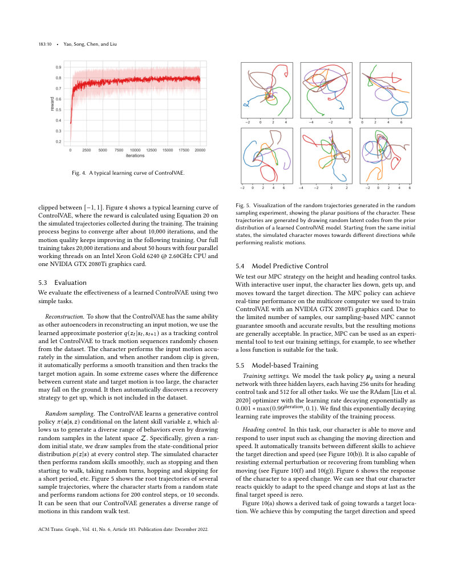
第 11 页Page 11PDF p.11
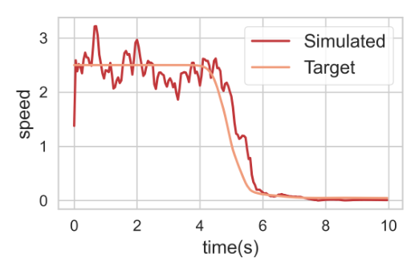
Fig. 6. Visualization of the character’s speed in the heading control task. The character slows down and stops under user control.
图 6. 朝向控制任务中角色速度的可视化。角色在用户控制下减速并停止。
Fig. 7. Typical learning curves of the skill control task. Red: the classifier loss. Blue: the direction loss. A lower classifier loss suggests that the learned policy can generate motions of the target skill. A lower direction loss indicates that the policy can accomplish the heading control task. The curves are normalized based on the values of the first iteration.
图 7. 技能控制任务的典型学习曲线。红色：分类器损失。蓝色：方向损失。较低的分类器损失表明，学得的策略能够生成目标技能对应的动作。较低的方向损失表明，策略能够完成朝向控制任务。各曲线均根据第一次迭代时的数值进行了归一化。
according to the relative distance between the character and the goal. The character can move towards the goal and stop when reaching it.
根据角色与目标之间的相对距离。角色能够向目标移动，并在到达目标时停止。
Steering control. In the steering control task, our character learns to move to the target direction while facing towards another direction. As shown in Figure 10(c), the character learns to walk sideways under user control. It demonstrates a more complex foot pattern compared with that used in simply moving forward.
转向控制。在转向控制任务中，我们的角色学习在面朝另一方向的同时，沿目标方向移动。如图 10(c) 所示，角色学会了在用户控制下侧向行走。与单纯向前移动时相比，这种行走方式呈现出更复杂的步法。
Skill control. In the skill control task, our character learns to accomplish the heading control task using a user-specified skill. Both the discriminator \(D\) and classifier \(C\) are modeled as neural networks with two 256-unit hidden layers. They are updated with the RAdam optimizer with the learning rates 0.0001 and 0.01, respectively. As shown in Figure 10(d) and Figure 10(e), the character can turn while maintaining the given style. Figure 7 shows the learning curve of this task. We can see that as the training processes, the policy learns the heading control first and gradually grasps the styles.
技能控制。在技能控制任务中，我们的角色学习使用用户指定的技能完成朝向控制任务。判别器 \(D\) 和分类器 \(C\) 均建模为包含两个隐藏层的神经网络，每层具有 256 个单元。两者使用 RAdam 优化器更新，学习率分别为 0.0001 和 0.01。如图 10(d) 和图 10(e) 所示，角色能够在保持给定风格的同时转向。图 7 展示了该任务的学习曲线。可以看到，随着训练的进行，策略首先学会朝向控制，然后逐渐掌握这些风格。
5.6 Comparison
5.6 对比
In this section, we conduct several experiments to justify our design choices and the performance of the ControlVAE.
本节通过若干实验验证我们的设计选择的合理性以及 ControlVAE 的性能。
Fig. 8. Visualization of different skills in the latent space.
图 8. 潜空间中不同技能的可视化。
Fig. 9. Training curves of the heading control policies using ControlVAE and VAE with non-conditional prior.
图 9. 使用 ControlVAE 和采用无条件先验的 VAE 时，朝向控制策略的训练曲线。
Comparison with VAE with non-conditional prior. One of the key components of ControlVAE is the state-conditional prior distribution. To show the effectiveness of this design, we train a different ControlVAE with the standard normal distribution \(\mathcal{N}(\boldsymbol{0},\boldsymbol{I})\) as the prior distribution. This can be achieved equivalently by defining the posterior as \(q(\boldsymbol{z}_t\mid\boldsymbol{s}_t,\boldsymbol{s}_{t+1})\sim\mathcal{N}(\boldsymbol{\mu}_q,\boldsymbol{I})\) and sampling \(\boldsymbol{z}\sim\mathcal{N}(\boldsymbol{0},\boldsymbol{I})\) when needed in the training. We refer to the ControlVAE with this configuration as the VAE with non-conditional prior (VAE-NC).
与采用无条件先验的 VAE 的对比。ControlVAE 的关键组成部分之一是以状态为条件的先验分布。为展示这一设计的有效性，我们训练了另一个 ControlVAE，以标准正态分布 \(\mathcal{N}(\boldsymbol{0},\boldsymbol{I})\) 作为先验分布。这可以等价地通过将后验定义为 \(q(\boldsymbol{z}_t\mid\boldsymbol{s}_t,\boldsymbol{s}_{t+1})\sim\mathcal{N}(\boldsymbol{\mu}_q,\boldsymbol{I})\)，并在训练需要时进行采样 \(\boldsymbol{z}\sim\mathcal{N}(\boldsymbol{0},\boldsymbol{I})\) 来实现。我们将采用这一配置的 ControlVAE 称为采用无条件先验的 VAE（VAE-NC）。
Figure 8 shows a comparison between the learned latent spaces of ControlVAE and VAE-NC, where we encode three motion clips of different skills into the latent spaces using the learned approximate posterior distributions. Generally speaking, the state-conditional prior allows each skill to be embedded into the latent space more continuously than the standard normal distribution, and the latent codes of different skills are more separated. This can be further justified by downstream tasks. In the random sampling test, the character controlled by VAE-NC behaves more unstably, often falls on the ground, and struggles to get up. Also in the heading control task, the character controlled by VAE-NC can hardly follow the target direction but keep turning and falling. The corresponding learning curve in Figure 9 also shows that the VAE with non-conditional prior performs worse than ControlVAE.
图 8 对比了 ControlVAE 与 VAE-NC 学得的潜空间，其中我们使用学得的近似后验分布，将三个不同技能的动作片段编码到潜空间中。总体而言，相较于标准正态分布，以状态为条件的先验能够使每种技能更连续地嵌入潜空间，同时使不同技能的潜编码更加分离。下游任务进一步验证了这一点。在随机采样测试中，由 VAE-NC 控制的角色表现更不稳定，经常跌倒在地，并且难以起身。同样，在朝向控制任务中，由 VAE-NC 控制的角色几乎无法沿目标方向移动，而是不断转向和跌倒。图 9 中相应的学习曲线也表明，采用无条件先验的 VAE 的表现不如 ControlVAE。
Comparison with reinforcement learning. Many recent works achieve successful hierarchical control policies using model-free reinforcement learning algorithms, where a task policy is trained on top of a learned skill latent space [Ling et al. 2020; Luo et al. 2020; Merel
与强化学习的对比。近期许多工作使用无模型强化学习算法，成功获得了分层控制策略，其中任务策略是在学得的技能潜空间之上训练的 [Ling et al. 2020; Luo et al. 2020; Merel
ACM Trans. Graph., Vol. 41, No. 6, Article 183. Publication date: December 2022.
ACM Trans. Graph.，第 41 卷，第 6 期，第 183 篇文章。出版日期：2022 年 12 月。
第 12 页Page 12PDF p.12
Fig. 10. Simulated character performing tasks with a high-level control policy.
图 10. 仿真角色使用高层控制策略执行任务。
et al. 2020]. Our ControlVAE also support training task-specific policies in this way. As a comparison with our model-based learning paradigm, we train the same heading control task using the PPO algorithm [Schulman et al. 2017], which is often implemented as a model-free reinforcement learning approach and is widely used in physics-based character animation.
et al. 2020]。我们的 ControlVAE 也支持以这种方式训练特定任务的策略。为与我们的基于模型的学习范式进行对比，我们使用 PPO 算法 [Schulman et al. 2017] 训练相同的朝向控制任务。该算法通常被实现为一种无模型强化学习方法，并广泛应用于基于物理的角色动画。
More specifically, the reinforcement learning algorithm optimizes a control policy \(\pi\) by maximizing the expected return over all possible simulation trajectories induced by \(\pi\). To train a task-specific control policy \(\pi(\boldsymbol{z}\mid\boldsymbol{s},\boldsymbol{g})\), we generate these trajectories by sampling skill variables \(\boldsymbol{z}\sim\pi(\boldsymbol{z}\mid\boldsymbol{s},\boldsymbol{g})\), converting \(\boldsymbol{z}\) into an action \(\boldsymbol{a}\) using the skill-conditioned policy \(\pi(\boldsymbol{a}\mid\boldsymbol{s},\boldsymbol{z})\) learned by ControlVAE, and then executing \(\boldsymbol{a}\) in the simulation. The reward function is simply defined \(r_t=e^{-\mathcal{L}_{\boldsymbol{g}}}\), where \(\mathcal{L}_{\boldsymbol{g}}\) is the task-specific loss function of the heading control task in Equation (25). Note that we do not include the falling penalty \(\mathcal{L}_{\text{fall}}\) in the reward, but instead early-terminate the trajectory when falls are detected. The control policy \(\pi(\boldsymbol{z}\mid\boldsymbol{s},\boldsymbol{g})\) is modeled the same as the one we used in the model-based learning.
更具体地说，强化学习算法通过最大化控制策略 \(\pi\) 所诱导的所有可能仿真轨迹上的期望回报来优化该策略。为训练特定任务的控制策略 \(\pi(\boldsymbol{z}\mid\boldsymbol{s},\boldsymbol{g})\)，我们首先采样技能变量 \(\boldsymbol{z}\sim\pi(\boldsymbol{z}\mid\boldsymbol{s},\boldsymbol{g})\)，再使用 ControlVAE 学得的以技能为条件的策略 \(\pi(\boldsymbol{a}\mid\boldsymbol{s},\boldsymbol{z})\) 将 \(\boldsymbol{z}\) 转换为动作 \(\boldsymbol{a}\)，随后在仿真中执行 \(\boldsymbol{a}\)，由此生成这些轨迹。奖励函数简单地定义为 \(r_t=e^{-\mathcal{L}_{\boldsymbol{g}}}\)，其中 \(\mathcal{L}_{\boldsymbol{g}}\) 是式 (25) 中朝向控制任务的特定任务损失函数。注意，我们没有在奖励中加入跌倒惩罚 \(\mathcal{L}_{\text{fall}}\)，而是在检测到跌倒时提前终止轨迹。控制策略 \(\pi(\boldsymbol{z}\mid\boldsymbol{s},\boldsymbol{g})\) 的建模方式与我们在基于模型的学习中使用的策略相同。
We train the policy \(\pi(\boldsymbol{z}\mid\boldsymbol{s},\boldsymbol{g})\) using our own implementation of the PPO algorithm, which can achieve comparable performance on simple tracking tasks with DeepMimic [Peng et al. 2018]. Figure 12 shows the learning curve of this training, as well as the learning curve of the model-based learning on the same task. In general, the policy trained using model-based learning can achieve good performance quickly, while PPO implementation takes more time and transitions to reach a comparable level of performance. It should be noted that in Figure 12, both the real and synthetic transitions are counted. The model-based learning process mainly consumes the synthetic transitions, which can be computed much more efficiently than the simulation due to the approximation nature of the world model and the help of modern GPU hardware. Our model-based learning approach can also achieve better performance with the same numbers of transitions due to the advantage of direct gradient delivery. In practice, the model-based learning can finish training with good results in half an hour, while the reinforcement learning will take a much longer time to obtain a quality control policy.
我们使用自行实现的 PPO 算法训练策略 \(\pi(\boldsymbol{z}\mid\boldsymbol{s},\boldsymbol{g})\)，该实现在简单跟踪任务上能够取得与 DeepMimic [Peng et al. 2018] 相当的性能。图 12 展示了这一训练过程的学习曲线，以及基于模型的学习在同一任务上的学习曲线。总体而言，通过基于模型的学习训练的策略能够迅速取得良好性能，而 PPO 实现需要更多时间和状态转移才能达到相当的性能水平。需要注意的是，图 12 同时计入了真实状态转移和合成状态转移。基于模型的学习过程主要使用合成状态转移；由于世界模型具有近似性质，加之现代 GPU 硬件的支持，计算这些转移的效率远高于仿真。得益于直接传递梯度的优势，我们的基于模型的学习方法在状态转移数量相同的情况下也能取得更好的性能。在实践中，基于模型的学习能够在半小时内完成训练并取得良好结果，而强化学习则需要长得多的时间才能获得高质量的控制策略。
ACM Trans. Graph., Vol. 41, No. 6, Article 183. Publication date: December 2022.
ACM Trans. Graph.，第 41 卷，第 6 期，第 183 篇文章。出版日期：2022 年 12 月。
第 13 页Page 13PDF p.13
Fig. 11. Simulated character performing different skills in the skill control task
图 11. 仿真角色在技能控制任务中执行不同技能
Fig. 12. Training curves of the heading control policies using model-based learning and reinforcement learning. Left: training progresses with respect to the number of transitions. Right: training progresses with respect to time.
图 12. 使用基于模型的学习和强化学习训练朝向控制策略的训练曲线。左：训练进展随状态转移次数的变化。右：训练进展随时间的变化。
5.7 Robustness, Scalability, and Generalization
5.7 鲁棒性、可扩展性与泛化能力
Random seed. In Figure 13(a) we show the results of training three ControlVAEs using different random seeds. It can be seen that our method performs consistently in this test. Another interesting fact is that the world models trained with different random seeds can replace each other in training the downstream locomotion tasks. To show this, we train two heading control policies using the same ControlVAE skill policy but with different world models trained with different random seeds. As shown in Figure 13(b), the performances of the results are very close.
随机种子。图 13(a) 展示了使用不同随机种子训练三个 ControlVAE 的结果。可以看出，我们的方法在该测试中表现一致。另一个有趣的事实是，在训练下游移动任务时，使用不同随机种子训练的世界模型可以相互替换。为展示这一点，我们使用相同的 ControlVAE 技能策略，搭配以不同随机种子训练的不同世界模型，训练了两个朝向控制策略。如图 13(b) 所示，两者的性能非常接近。
Training settings. Figure 13(c) shows the effect of different training settings. We first test to train the world model without the synthetic rollouts, i.e. \(T_w = 1\). The result shows that the training process is fairly unstable and blows up early. In the second test, we train ControlVAE with a larger learning rate (\(2e-5\)). The training process converges faster than our default settings but can become
训练设置。图 13(c) 展示了不同训练设置的影响。我们首先测试了不使用合成轨迹展开来训练世界模型，即 \(T_w = 1\)。结果表明，训练过程相当不稳定，并在早期便发生发散。在第二项测试中，我们使用更大的学习率（\(2e-5\)）训练 ControlVAE。与默认设置相比，这一训练过程收敛得更快，但可能变得
Fig. 13. (a) Training ControlVAE with different random seeds. (b) Training heading control with the original/altered world model. We train ControlVAE and the original world model with seed 0. The altered world model is trained with seed 1. (c) Training curves with different settings: using a larger learning rate and training the world model without synthetic rollouts. (d) Training ControlVAE on different datasets.
图 13. (a) 使用不同随机种子训练 ControlVAE。(b) 使用原始／替换后的世界模型训练朝向控制。我们使用种子 0 训练 ControlVAE 和原始世界模型，使用种子 1 训练替换后的世界模型。(c) 不同设置下的训练曲线：使用更大的学习率，以及不使用合成轨迹展开来训练世界模型。(d) 在不同数据集上训练 ControlVAE。
unstable as the training progresses. However, even though the training loss may occasionally increase quickly, we can early-terminate
随着训练的推进而不稳定。然而，即使训练损失偶尔会迅速增大，我们仍可以提前终止
ACM Trans. Graph., Vol. 41, No. 6, Article 183. Publication date: December 2022.
ACM Trans. Graph.，第 41 卷，第 6 期，文章编号 183。出版日期：2022 年 12 月。
第 14 页Page 14PDF p.14
Fig. 14. Tracking error of different motions. The motion with the prefix sfu are selected form the SFU motion dataset [2011], which are not used in training the ControlVAE.
图 14. 不同动作的跟踪误差。带有前缀 sfu 的动作选自 SFU 动作数据集 [2011]，未用于 ControlVAE 的训练。
the learning during the stable region, and the learned ControlVAE can still accomplish the downstream tasks.
稳定阶段内的学习，而训练得到的 ControlVAE 仍能完成下游任务。
Coverage. To test how well the learned skill embeddings cover the training skills, we let ControlVAE track all the motion sequences in the training dataset and check the accuracy of the reconstruction. We divide the long motion sequences into 2-second clips, and calculate the average tracking error between the relative position of each body to the root and that in the reference. As shown in Figure 14, the learned ControlVAE can reconstruct the training motions accurately, which indicates that all the training skills are embedded in the latent space. We further test the ability of the learned ControlVAE in reconstructing unseen motions. Five motion clips from the SFU dataset [2011] are selected in this test, as shown in Figure 14, which are not used in the training. As indicated in Figure 14, ControlVAE can track the unseen motions that are similar to the existing skills in the training dataset accurately, such as stylized walking and stomping, albeit with some motion details missing. For the motions that are significantly different, such as rolling, the character only struggles on the ground, causing a large tracking error.
覆盖程度。为测试学得的技能嵌入对训练技能的覆盖程度，我们让 ControlVAE 跟踪训练数据集中的所有动作序列，并检查重建的准确性。我们将长动作序列划分为 2 秒长的片段，并计算各刚体相对于根节点的位置与参考动作中相应位置之间的平均跟踪误差。如图 14 所示，学得的 ControlVAE 能够准确重建训练动作，这表明所有训练技能都已嵌入潜空间。我们进一步测试了学得的 ControlVAE 重建未见动作的能力。在该测试中，我们从 SFU 数据集 [2011] 中选取了五个未用于训练的动作片段，如图 14 所示。图 14 表明，对于与训练数据集中已有技能相似的未见动作，例如风格化行走和跺脚，ControlVAE 能够准确跟踪，尽管会缺失一些动作细节。对于差异显著的动作，例如翻滚，角色只能在地面上挣扎，从而产生较大的跟踪误差。
Dataset. We test our ControlVAE on two other datasets. One is a selected subset of the SFU mocap dataset [2011], containing approximately 7-minute diverse locomotion clips. The other is a 4-minute dance clip selected from the LaFAN dataset [Harvey et al. 2020]. These tests have similar training processes, and random sampling in the latent spaces creates diverse locomotion behaviors and dances.
数据集。我们在另外两个数据集上测试了 ControlVAE。一个是从 SFU 动作捕捉数据集 [2011] 中选取的子集，包含总长约 7 分钟的多样化移动动作片段。另一个是从 LaFAN 数据集 [Harvey et al. 2020] 中选取的一个 4 分钟舞蹈片段。这些测试具有相似的训练过程，在潜空间中随机采样能够生成多样化的移动行为和舞蹈。
We further conduct an experiment on a large-scale dataset composed of 3.3 hours (after the mirror augmentation) of motions selected from the LaFAN [Harvey et al. 2020] dataset, which covers most of the motion categories except for those interact with external objects or uneven terrains. The result in Figure 13(d) shows that the training process finishes in roughly the same time as that on the small datasets but converges to a lower reward. The learned skill embeddings can still recover an input motion with a larger visual discrepancy, but the performance on the downstream tasks are significance degenerated.
我们进一步在一个大规模数据集上进行了实验，该数据集由选自 LaFAN [Harvey et al. 2020] 数据集的动作组成，经镜像增强后总长为 3.3 小时，涵盖了除与外部物体或不平坦地形交互的动作之外的大多数动作类别。图 13(d) 的结果表明，训练过程的完成时间与小规模数据集上的训练大致相同，但收敛到的奖励更低。学得的技能嵌入仍能还原输入动作，不过视觉差异更大，而下游任务的性能则显著下降。
6 DISCUSSION
6 讨论
In this paper, we present ControlVAE, a model-based framework for learning generative motion control policies for physics-based characters. We show that state-conditional VAEs can be efficiently trained using a model-based method, resulting in a rich and flexible latent
本文提出了 ControlVAE，这是一个基于模型的框架，用于为基于物理的角色学习生成式动作控制策略。我们表明，基于模型的方法能够高效训练以状态为条件的 VAE，从而得到一个丰富而灵活的潜在
space that captures a diverse set of skills and a skill-conditioned control policy that effectively converts each sample in the latent space into realistic behaviors in physics-based simulation. We show that taking advantage of these generative control policies, we can generate various motion skills simply by sampling from the latent space. Task-specific control policies can be further trained to operate in this latent space, allowing a variety of high-level tasks to be accomplished using realistic motions.
空间，用以表征多种技能，以及一个以技能为条件的控制策略，能够有效地将潜空间中的每个样本转换为物理仿真中的逼真行为。我们表明，利用这些生成式控制策略，只需在潜空间中采样就能生成各种动作技能。还可以进一步训练特定任务的控制策略，使其在这一潜空间中进行操作，从而使用逼真的动作完成多种高层任务。
The key observation of this work is that by learning a differentiable world model, we can effectively bridge the gap between the learning of control policies and the losses defined on the simulated motion. Furthermore, the learned world model provides an effective differentiable approximation of the real simulation, which allows high-level policy to be trained efficiently using model-based learning. We believe that our results open the door to many interesting topics, such as model-based learning of controllers using other generative models like GAN and normalizing flows. In addition, combining model-based learning with other successful motion synthesis algorithms could be a potential way to realized physics-based motion synthesis [Starke et al. 2021], style transfer [Aberman et al. 2020], and motion in-painting [Harvey et al. 2020].
本工作的关键发现是，通过学习一个可微世界模型，可以有效打通控制策略的学习与定义在仿真动作上的损失之间的联系。此外，学得的世界模型为真实仿真提供了有效的可微近似，使高层策略能够通过基于模型的学习得到高效训练。我们认为，这些结果为许多有趣的课题开辟了道路，例如利用 GAN 和归一化流等其他生成模型，通过基于模型的学习来训练控制器。此外，将基于模型的学习与其他成功的动作合成算法相结合，可能成为实现基于物理的动作合成 [Starke et al. 2021]、风格迁移 [Aberman et al. 2020] 和动作补全 [Harvey et al. 2020] 的一种潜在途径。
For the future work, we wish to explore the possibility of adapting the learned world model to environmental changes, such as dealing with additional objects and characters, which potentially allows us to extend a learned skill space to unseen environments. Currently, our model-based learning schemes can not handle such tasks, for which the model-free reinforcement learning methods are still needed. In addition, similar to other data-driven method, the performance of our system is still bounded by the training dataset. For example, we have encountered problems in learning a high-level policy to control the character to travel while facing towards certain directions because the corresponding motions are sparse in the dataset. Our ControlVAE also performs less efficiently in learning large-scale motion dataset with hours of motions, potentially due to the limited capacity of the network architecture. Learning these sparse skills more effectively, as well as scaling up to large-scale datasets, will be a very interesting direction for future exploration.
在未来工作中，我们希望探索使学得的世界模型适应环境变化的可能性，例如处理新增的物体和角色，从而有望将已学得的技能空间扩展到未见过的环境。目前，我们基于模型的学习方案还无法处理这类任务，仍需要无模型强化学习方法。此外，与其他数据驱动方法类似，我们系统的性能仍受训练数据集的限制。例如，在学习控制角色面朝特定方向移动的高层策略时，我们遇到了困难，因为数据集中相应的动作较为稀少。我们的 ControlVAE 在学习包含数小时动作的大规模动作数据集时，效率也较低，这可能是由于网络架构的容量有限。如何更有效地学习这些稀少的技能，以及如何扩展到大规模数据集，将是未来非常值得探索的方向。
ACKNOWLEDGMENTS
致谢
We thank the anonymous reviewers for their constructive comments. This work was supported in part by NSFC Projects of International Cooperation and Exchanges (62161146002).
我们感谢匿名审稿人提出的建设性意见。本工作得到国家自然科学基金国际合作与交流项目（62161146002）的部分资助。
REFERENCES
参考文献
Kfir Aberman, Yijia Weng, Dani Lischinski, Daniel Cohen-Or, and Baoquan Chen. 2020. Unpaired Motion Style Transfer from Video to Animation. ACM Transactions on Graphics 39, 4 (July 2020), 64:64:1–64:64:12.
Kfir Aberman, Yijia Weng, Dani Lischinski, Daniel Cohen-Or, and Baoquan Chen. 2020. Unpaired Motion Style Transfer from Video to Animation. ACM Transactions on Graphics 39, 4 (July 2020), 64:64:1–64:64:12.
- Kevin Bergamin, Simon Clavet, Daniel Holden, and James Richard Forbes. 2019. DReCon: Data-Driven Responsive Control of Physics-Based Characters. ACM Transactions on Graphics 38, 6 (Nov. 2019), 206:1–206:11.
- Kevin Bergamin, Simon Clavet, Daniel Holden, and James Richard Forbes. 2019. DReCon: Data-Driven Responsive Control of Physics-Based Characters. ACM Transactions on Graphics 38, 6 (Nov. 2019), 206:1–206:11.
Silvia Chiappa, Sébastien Racanière, Daan Wierstra, and Shakir Mohamed. 2017. Recurrent Environment Simulators. In 5th International Conference on Learning Representations, ICLR 2017 . OpenReview.net, Toulon, France.
Silvia Chiappa, Sébastien Racanière, Daan Wierstra, and Shakir Mohamed. 2017. Recurrent Environment Simulators. In 5th International Conference on Learning Representations, ICLR 2017 . OpenReview.net, Toulon, France.
Stelian Coros, Philippe Beaudoin, and Michiel van de Panne. 2010. Generalized Biped Walking Control. ACM Transactions on Graphics 29, 4 (July 2010), 130:1–130:9. Marc Peter Deisenroth and Carl Edward Rasmussen. 2011. PILCO: A Model-Based and Data-Efficient Approach to Policy Search. In Proceedings of the 28th International Conference on International Conference on Machine Learning (ICML’11) . Omnipress, Madison, WI, USA, 465–472.
Stelian Coros, Philippe Beaudoin, and Michiel van de Panne. 2010. Generalized Biped Walking Control. ACM Transactions on Graphics 29, 4 (July 2010), 130:1–130:9. Marc Peter Deisenroth and Carl Edward Rasmussen. 2011. PILCO: A Model-Based and Data-Efficient Approach to Policy Search. In Proceedings of the 28th International Conference on International Conference on Machine Learning (ICML’11) . Omnipress, Madison, WI, USA, 465–472.
ACM Trans. Graph., Vol. 41, No. 6, Article 183. Publication date: December 2022.
ACM Trans. Graph., Vol. 41, No. 6, Article 183. Publication date: December 2022.
第 15 页Page 15PDF p.15
- Haegwang Eom, Daseong Han, Joseph S. Shin, and Junyong Noh. 2019. Model Predictive Control with a Visuomotor System for Physics-based Character Animation. ACM Transactions on Graphics 39, 1 (Oct. 2019), 3:1–3:11.
- Haegwang Eom, Daseong Han, Joseph S. Shin, and Junyong Noh. 2019. Model Predictive Control with a Visuomotor System for Physics-based Character Animation. ACM Transactions on Graphics 39, 1 (Oct. 2019), 3:1–3:11.
- Marco Fraccaro, Søren Kaae Sønderby, Ulrich Paquet, and Ole Winther. 2016. Sequential Neural Models with Stochastic Layers. In Proceedings of the 30th International Conference on Neural Information Processing Systems (NIPS’16) . Curran Associates Inc., Red Hook, NY, USA, 2207–2215.
- Marco Fraccaro, Søren Kaae Sønderby, Ulrich Paquet, and Ole Winther. 2016. Sequential Neural Models with Stochastic Layers. In Proceedings of the 30th International Conference on Neural Information Processing Systems (NIPS’16) . Curran Associates Inc., Red Hook, NY, USA, 2207–2215.
- Levi Fussell, Kevin Bergamin, and Daniel Holden. 2021. SuperTrack: Motion Tracking for Physically Simulated Characters Using Supervised Learning. ACM Transactions on Graphics 40, 6 (Dec. 2021), 197:1–197:13.
- Levi Fussell, Kevin Bergamin, and Daniel Holden. 2021. SuperTrack: Motion Tracking for Physically Simulated Characters Using Supervised Learning. ACM Transactions on Graphics 40, 6 (Dec. 2021), 197:1–197:13.
- Radek Grzeszczuk, Demetri Terzopoulos, and Geoffrey Hinton. 1998. NeuroAnimator: Fast Neural Network Emulation and Control of Physics-Based Models. In Proceedings of the 25th Annual Conference on Computer Graphics and Interactive Techniques (SIGGRAPH ’98) . Association for Computing Machinery, New York, NY, USA, 9–20. - David Ha and Jürgen Schmidhuber. 2018. Recurrent World Models Facilitate Policy Evolution. In Advances in Neural Information Processing Systems 31: Annual Conference on Neural Information Processing Systems 2018, NeurIPS 2018, December 3-8, 2018, Montréal, Canada , Samy Bengio, Hanna M. Wallach, Hugo Larochelle, Kristen Grauman, Nicolò Cesa-Bianchi, and Roman Garnett (Eds.). 2455–2467.
- Radek Grzeszczuk, Demetri Terzopoulos, and Geoffrey Hinton. 1998. NeuroAnimator: Fast Neural Network Emulation and Control of Physics-Based Models. In Proceedings of the 25th Annual Conference on Computer Graphics and Interactive Techniques (SIGGRAPH ’98) . Association for Computing Machinery, New York, NY, USA, 9–20. - David Ha and Jürgen Schmidhuber. 2018. Recurrent World Models Facilitate Policy Evolution. In Advances in Neural Information Processing Systems 31: Annual Conference on Neural Information Processing Systems 2018, NeurIPS 2018, December 3-8, 2018, Montréal, Canada , Samy Bengio, Hanna M. Wallach, Hugo Larochelle, Kristen Grauman, Nicolò Cesa-Bianchi, and Roman Garnett (Eds.). 2455–2467.
- Perttu Hämäläinen, Joose Rajamäki, and C. Karen Liu. 2015. Online Control of Simulated Humanoids Using Particle Belief Propagation. ACM Transactions on Graphics 34, 4 (July 2015), 81:1–81:13. - Perttu Hamalainen, Juuso Toikka, Amin Babadi, and Karen Liu. 2020. Visualizing Movement Control Optimization Landscapes. IEEE Transactions on Visualization and Computer Graphics (2020), 1–1.
- Perttu Hämäläinen, Joose Rajamäki, and C. Karen Liu. 2015. Online Control of Simulated Humanoids Using Particle Belief Propagation. ACM Transactions on Graphics 34, 4 (July 2015), 81:1–81:13. - Perttu Hamalainen, Juuso Toikka, Amin Babadi, and Karen Liu. 2020. Visualizing Movement Control Optimization Landscapes. IEEE Transactions on Visualization and Computer Graphics (2020), 1–1.
- Félix G. Harvey, Mike Yurick, Derek Nowrouzezahrai, and Christopher Pal. 2020. Robust Motion In-Betweening. ACM Trans. Graph. 39, 4, Article 60 (Jul 2020), 12 pages. - Nicolas Heess, Gregory Wayne, David Silver, Timothy Lillicrap, Tom Erez, and Yuval Tassa. 2015. Learning Continuous Control Policies by Stochastic Value Gradients. In Advances in Neural Information Processing Systems , C. Cortes, N. Lawrence, D. Lee, M. Sugiyama, and R. Garnett (Eds.), Vol. 28. Curran Associates, Inc.
- Félix G. Harvey, Mike Yurick, Derek Nowrouzezahrai, and Christopher Pal. 2020. Robust Motion In-Betweening. ACM Trans. Graph. 39, 4, Article 60 (Jul 2020), 12 pages. - Nicolas Heess, Gregory Wayne, David Silver, Timothy Lillicrap, Tom Erez, and Yuval Tassa. 2015. Learning Continuous Control Policies by Stochastic Value Gradients. In Advances in Neural Information Processing Systems , C. Cortes, N. Lawrence, D. Lee, M. Sugiyama, and R. Garnett (Eds.), Vol. 28. Curran Associates, Inc.
- Gustav Eje Henter, Simon Alexanderson, and Jonas Beskow. 2020. MoGlow: Probabilistic and Controllable Motion Synthesis Using Normalising Flows. ACM Trans. Graph. 39, 6, Article 236 (nov 2020), 14 pages.
- Gustav Eje Henter, Simon Alexanderson, and Jonas Beskow. 2020. MoGlow: Probabilistic and Controllable Motion Synthesis Using Normalising Flows. ACM Trans. Graph. 39, 6, Article 236 (nov 2020), 14 pages.
- Irina Higgins, Loïc Matthey, Arka Pal, Christopher P. Burgess, Xavier Glorot, Matthew M. Botvinick, Shakir Mohamed, and Alexander Lerchner. 2017. beta-VAE: Learning Basic Visual Concepts with a Constrained Variational Framework. In ICLR .
- Irina Higgins, Loïc Matthey, Arka Pal, Christopher P. Burgess, Xavier Glorot, Matthew M. Botvinick, Shakir Mohamed, and Alexander Lerchner. 2017. beta-VAE: Learning Basic Visual Concepts with a Constrained Variational Framework. In ICLR .
- Jonathan Ho and Stefano Ermon. 2016. Generative Adversarial Imitation Learning. In Advances in Neural Information Processing Systems , D. Lee, M. Sugiyama, U. Luxburg, I. Guyon, and R. Garnett (Eds.), Vol. 29. Curran Associates, Inc.
- Jonathan Ho and Stefano Ermon. 2016. Generative Adversarial Imitation Learning. In Advances in Neural Information Processing Systems , D. Lee, M. Sugiyama, U. Luxburg, I. Guyon, and R. Garnett (Eds.), Vol. 29. Curran Associates, Inc.
- Jessica K. Hodgins, Wayne L. Wooten, David C. Brogan, and James F. O’Brien. 1995. Animating Human Athletics. In Proceedings of the 22nd Annual Conference on Computer Graphics and Interactive Techniques (SIGGRAPH ’95) . Association for Computing Machinery, New York, NY, USA, 71–78.
- Jessica K. Hodgins, Wayne L. Wooten, David C. Brogan, and James F. O’Brien. 1995. Animating Human Athletics. In Proceedings of the 22nd Annual Conference on Computer Graphics and Interactive Techniques (SIGGRAPH ’95) . Association for Computing Machinery, New York, NY, USA, 71–78.
- Daniel Holden, Jun Saito, and Taku Komura. 2016. A Deep Learning Framework for Character Motion Synthesis and Editing. ACM Transactions on Graphics 35, 4 (July 2016), 138:1–138:11.
- Daniel Holden, Jun Saito, and Taku Komura. 2016. A Deep Learning Framework for Character Motion Synthesis and Editing. ACM Transactions on Graphics 35, 4 (July 2016), 138:1–138:11.
- Seokpyo Hong, Daseong Han, Kyungmin Cho, Joseph S. Shin, and Junyong Noh. 2019. Physics-Based Full-Body Soccer Motion Control for Dribbling and Shooting. ACM Transactions on Graphics 38, 4 (July 2019), 74:1–74:12. - Michael Janner, Justin Fu, Marvin Zhang, and Sergey Levine. 2021. When to Trust Your Model: Model-Based Policy Optimization. https://doi.org/10.48550/arXiv.1906.08253 arXiv:1906.08253 [cs, stat]
- Seokpyo Hong, Daseong Han, Kyungmin Cho, Joseph S. Shin, and Junyong Noh. 2019. Physics-Based Full-Body Soccer Motion Control for Dribbling and Shooting. ACM Transactions on Graphics 38, 4 (July 2019), 74:1–74:12. - Michael Janner, Justin Fu, Marvin Zhang, and Sergey Levine. 2021. When to Trust Your Model: Model-Based Policy Optimization. https://doi.org/10.48550/arXiv.1906.08253 arXiv:1906.08253 [cs, stat]
- Durk P Kingma and Prafulla Dhariwal. 2018. Glow: Generative Flow with Invertible 1x1 Convolutions. In Advances in Neural Information Processing Systems , S. Bengio, H. Wallach, H. Larochelle, K. Grauman, N. Cesa-Bianchi, and R. Garnett (Eds.), Vol. 31. Curran Associates, Inc.
- Durk P Kingma and Prafulla Dhariwal. 2018. Glow: Generative Flow with Invertible 1x1 Convolutions. In Advances in Neural Information Processing Systems , S. Bengio, H. Wallach, H. Larochelle, K. Grauman, N. Cesa-Bianchi, and R. Garnett (Eds.), Vol. 31. Curran Associates, Inc.
- Diederik P. Kingma and Max Welling. 2014. Auto-Encoding Variational Bayes. In 2nd International Conference on Learning Representations, ICLR 2014 . Banff, AB, Canada. - Kyungho Lee, Sehee Min, Sunmin Lee, and Jehee Lee. 2021. Learning Time-Critical Responses for Interactive Character Control. ACM Transactions on Graphics 40, 4 (July 2021), 147:1–147:11.
- Diederik P. Kingma and Max Welling. 2014. Auto-Encoding Variational Bayes. In 2nd International Conference on Learning Representations, ICLR 2014 . Banff, AB, Canada. - Kyungho Lee, Sehee Min, Sunmin Lee, and Jehee Lee. 2021. Learning Time-Critical Responses for Interactive Character Control. ACM Transactions on Graphics 40, 4 (July 2021), 147:1–147:11.
- Yoonsang Lee, Sungeun Kim, and Jehee Lee. 2010. Data-Driven Biped Control. ACM Transactions on Graphics 29, 4 (July 2010), 129:1–129:8.
- Yoonsang Lee, Sungeun Kim, and Jehee Lee. 2010. Data-Driven Biped Control. ACM Transactions on Graphics 29, 4 (July 2010), 129:1–129:8.
- Sergey Levine, Jack M. Wang, Alexis Haraux, Zoran Popović, and Vladlen Koltun. 2012. Continuous Character Control with Low-Dimensional Embeddings. ACM Trans. Graph. 31, 4, Article 28 (Jul 2012), 10 pages.
- Sergey Levine, Jack M. Wang, Alexis Haraux, Zoran Popović, and Vladlen Koltun. 2012. Continuous Character Control with Low-Dimensional Embeddings. ACM Trans. Graph. 31, 4, Article 28 (Jul 2012), 10 pages.
- Peizhuo Li, Kfir Aberman, Zihan Zhang, Rana Hanocka, and Olga Sorkine-Hornung. 2022. GANimator: Neural Motion Synthesis from a Single Sequence. ACM Trans. Graph. 41, 4, Article 138 (jul 2022), 12 pages.
- Peizhuo Li, Kfir Aberman, Zihan Zhang, Rana Hanocka, and Olga Sorkine-Hornung. 2022. GANimator: Neural Motion Synthesis from a Single Sequence. ACM Trans. Graph. 41, 4, Article 138 (jul 2022), 12 pages.
- Hung Yu Ling, Fabio Zinno, George Cheng, and Michiel Van De Panne. 2020. Character Controllers Using Motion VAEs. ACM Transactions on Graphics 39, 4 (July 2020), 40:40:1–40:40:12.
- Hung Yu Ling, Fabio Zinno, George Cheng, and Michiel Van De Panne. 2020. Character Controllers Using Motion VAEs. ACM Transactions on Graphics 39, 4 (July 2020), 40:40:1–40:40:12.
- Libin Liu and Jessica Hodgins. 2017. Learning to Schedule Control Fragments for Physics-Based Characters Using Deep Q-Learning. ACM Transactions on Graphics 36, 4 (June 2017), 42a:1.
- Libin Liu and Jessica Hodgins. 2017. Learning to Schedule Control Fragments for Physics-Based Characters Using Deep Q-Learning. ACM Transactions on Graphics 36, 4 (June 2017), 42a:1.
- Liyuan Liu, Haoming Jiang, Pengcheng He, Weizhu Chen, Xiaodong Liu, Jianfeng Gao, and Jiawei Han. 2020. On the Variance of the Adaptive Learning Rate and Beyond. In 8th International Conference on Learning Representations, ICLR 2020, Addis Ababa, Ethiopia, April 26-30, 2020 . OpenReview.net.
- Liyuan Liu, Haoming Jiang, Pengcheng He, Weizhu Chen, Xiaodong Liu, Jianfeng Gao, and Jiawei Han. 2020. On the Variance of the Adaptive Learning Rate and Beyond. In 8th International Conference on Learning Representations, ICLR 2020, Addis Ababa, Ethiopia, April 26-30, 2020 . OpenReview.net.
- Libin Liu, Michiel Van De Panne, and Kangkang Yin. 2016. Guided Learning of Control Graphs for Physics-Based Characters. ACM Transactions on Graphics 35, 3 (May 2016), 29:1–29:14.
- Libin Liu, Michiel Van De Panne, and Kangkang Yin. 2016. Guided Learning of Control Graphs for Physics-Based Characters. ACM Transactions on Graphics 35, 3 (May 2016), 29:1–29:14.
- Libin Liu, KangKang Yin, Michiel van de Panne, and Baining Guo. 2012. Terrain Runner: Control, Parameterization, Composition, and Planning for Highly Dynamic Motions. ACM Transactions on Graphics 31, 6 (Nov. 2012), 154:1–154:10.
- Libin Liu, KangKang Yin, Michiel van de Panne, and Baining Guo. 2012. Terrain Runner: Control, Parameterization, Composition, and Planning for Highly Dynamic Motions. ACM Transactions on Graphics 31, 6 (Nov. 2012), 154:1–154:10.
- Libin Liu, KangKang Yin, Bin Wang, and Baining Guo. 2013. Simulation and Control of Skeleton-Driven Soft Body Characters. ACM Transactions on Graphics 32, 6 (Nov. 2013), 1–8. - Ying-Sheng Luo, Jonathan Hans Soeseno, Trista Pei-Chun Chen, and Wei-Chao Chen. 2020. CARL: Controllable Agent with Reinforcement Learning for Quadruped Locomotion. ACM Transactions on Graphics 39, 4 (July 2020), 38:38:1–38:38:10. - Adriano Macchietto, Victor Zordan, and Christian R. Shelton. 2009. Momentum Control for Balance. In ACM SIGGRAPH 2009 Papers (SIGGRAPH ’09) . Association for Computing Machinery, New York, NY, USA, 1–8. - Xudong Mao, Qing Li, Haoran Xie, Raymond Y.K. Lau, Zhen Wang, and Stephen Paul Smolley. 2017. Least Squares Generative Adversarial Networks. In Proceedings of the IEEE International Conference on Computer Vision (ICCV) .
- Libin Liu, KangKang Yin, Bin Wang, and Baining Guo. 2013. Simulation and Control of Skeleton-Driven Soft Body Characters. ACM Transactions on Graphics 32, 6 (Nov. 2013), 1–8. - Ying-Sheng Luo, Jonathan Hans Soeseno, Trista Pei-Chun Chen, and Wei-Chao Chen. 2020. CARL: Controllable Agent with Reinforcement Learning for Quadruped Locomotion. ACM Transactions on Graphics 39, 4 (July 2020), 38:38:1–38:38:10. - Adriano Macchietto, Victor Zordan, and Christian R. Shelton. 2009. Momentum Control for Balance. In ACM SIGGRAPH 2009 Papers (SIGGRAPH ’09) . Association for Computing Machinery, New York, NY, USA, 1–8. - Xudong Mao, Qing Li, Haoran Xie, Raymond Y.K. Lau, Zhen Wang, and Stephen Paul Smolley. 2017. Least Squares Generative Adversarial Networks. In Proceedings of the IEEE International Conference on Computer Vision (ICCV) .
- Josh Merel, Leonard Hasenclever, Alexandre Galashov, Arun Ahuja, Vu Pham, Greg Wayne, Yee Whye Teh, and Nicolas Heess. 2018. Neural Probabilistic Motor Primitives for Humanoid Control. In International Conference on Learning Representations . - Josh Merel, Saran Tunyasuvunakool, Arun Ahuja, Yuval Tassa, Leonard Hasenclever, Vu Pham, Tom Erez, Greg Wayne, and Nicolas Heess. 2020. Catch & Carry: Reusable Neural Controllers for Vision-Guided Whole-Body Tasks. ACM Transactions on Graphics 39, 4 (July 2020), 39:39:1–39:39:12.
- Josh Merel, Leonard Hasenclever, Alexandre Galashov, Arun Ahuja, Vu Pham, Greg Wayne, Yee Whye Teh, and Nicolas Heess. 2018. Neural Probabilistic Motor Primitives for Humanoid Control. In International Conference on Learning Representations . - Josh Merel, Saran Tunyasuvunakool, Arun Ahuja, Yuval Tassa, Leonard Hasenclever, Vu Pham, Tom Erez, Greg Wayne, and Nicolas Heess. 2020. Catch & Carry: Reusable Neural Controllers for Vision-Guided Whole-Body Tasks. ACM Transactions on Graphics 39, 4 (July 2020), 39:39:1–39:39:12.
- Jianyuan Min and Jinxiang Chai. 2012. Motion Graphs++: A Compact Generative Model for Semantic Motion Analysis and Synthesis. ACM Trans. Graph. 31, 6, Article 153 (nov 2012), 12 pages.
- Jianyuan Min and Jinxiang Chai. 2012. Motion Graphs++: A Compact Generative Model for Semantic Motion Analysis and Synthesis. ACM Trans. Graph. 31, 6, Article 153 (nov 2012), 12 pages.
- Miguel Angel Zamora Mora, Momchil P Peychev, Sehoon Ha, Martin Vechev, and Stelian Coros. 2021. PODS: Policy Optimization via Differentiable Simulation. In International Conference on Machine Learning . PMLR, 7805–7817.
- Miguel Angel Zamora Mora, Momchil P Peychev, Sehoon Ha, Martin Vechev, and Stelian Coros. 2021. PODS: Policy Optimization via Differentiable Simulation. In International Conference on Machine Learning . PMLR, 7805–7817.
- Igor Mordatch, Martin de Lasa, and Aaron Hertzmann. 2010. Robust Physics-Based Locomotion Using Low-Dimensional Planning. ACM Transactions on Graphics 29, 4 (July 2010), 71:1–71:8.
- Igor Mordatch, Martin de Lasa, and Aaron Hertzmann. 2010. Robust Physics-Based Locomotion Using Low-Dimensional Planning. ACM Transactions on Graphics 29, 4 (July 2010), 71:1–71:8.
- Igor Mordatch, Emanuel Todorov, and Zoran Popović. 2012. Discovery of Complex Behaviors through Contact-Invariant Optimization. ACM Transactions on Graphics 31, 4 (July 2012), 43:1–43:8.
- Igor Mordatch, Emanuel Todorov, and Zoran Popović. 2012. Discovery of Complex Behaviors through Contact-Invariant Optimization. ACM Transactions on Graphics 31, 4 (July 2012), 43:1–43:8.
- Uldarico Muico, Jovan Popović, and Zoran Popović. 2011. Composite Control of Physically Simulated Characters. ACM Transactions on Graphics 30, 3 (May 2011), 16:1– 16:11.
- Uldarico Muico, Jovan Popović, and Zoran Popović. 2011. Composite Control of Physically Simulated Characters. ACM Transactions on Graphics 30, 3 (May 2011), 16:1– 16:11.
- Anusha Nagabandi, Gregory Kahn, Ronald S. Fearing, and Sergey Levine. 2018. Neural Network Dynamics for Model-Based Deep Reinforcement Learning with Model-Free Fine-Tuning. In 2018 IEEE International Conference on Robotics and Automation, ICRA 2018, Brisbane, Australia, May 21-25, 2018 . IEEE, 7559–7566.
- Anusha Nagabandi, Gregory Kahn, Ronald S. Fearing, and Sergey Levine. 2018. Neural Network Dynamics for Model-Based Deep Reinforcement Learning with Model-Free Fine-Tuning. In 2018 IEEE International Conference on Robotics and Automation, ICRA 2018, Brisbane, Australia, May 21-25, 2018 . IEEE, 7559–7566.
- Soohwan Park, Hoseok Ryu, Seyoung Lee, Sunmin Lee, and Jehee Lee. 2019. Learning Predict-and-Simulate Policies from Unorganized Human Motion Data. ACM Trans. Graph. 38, 6, Article 205 (nov 2019), 11 pages.
- Soohwan Park, Hoseok Ryu, Seyoung Lee, Sunmin Lee, and Jehee Lee. 2019. Learning Predict-and-Simulate Policies from Unorganized Human Motion Data. ACM Trans. Graph. 38, 6, Article 205 (nov 2019), 11 pages.
- Adam Paszke, Sam Gross, Francisco Massa, Adam Lerer, James Bradbury, Gregory Chanan, Trevor Killeen, Zeming Lin, Natalia Gimelshein, Luca Antiga, Alban Desmaison, Andreas Kopf, Edward Yang, Zachary DeVito, Martin Raison, Alykhan Tejani, Sasank Chilamkurthy, Benoit Steiner, Lu Fang, Junjie Bai, and Soumith Chintala. 2019. PyTorch: An Imperative Style, High-Performance Deep Learning Library. In Advances in Neural Information Processing Systems 32 , H. Wallach, H. Larochelle, A. Beygelzimer, F. d'Alché-Buc, E. Fox, and R. Garnett (Eds.). Curran Associates, Inc., 8024–8035.
- Adam Paszke, Sam Gross, Francisco Massa, Adam Lerer, James Bradbury, Gregory Chanan, Trevor Killeen, Zeming Lin, Natalia Gimelshein, Luca Antiga, Alban Desmaison, Andreas Kopf, Edward Yang, Zachary DeVito, Martin Raison, Alykhan Tejani, Sasank Chilamkurthy, Benoit Steiner, Lu Fang, Junjie Bai, and Soumith Chintala. 2019. PyTorch: An Imperative Style, High-Performance Deep Learning Library. In Advances in Neural Information Processing Systems 32 , H. Wallach, H. Larochelle, A. Beygelzimer, F. d'Alché-Buc, E. Fox, and R. Garnett (Eds.). Curran Associates, Inc., 8024–8035.
- Xue Bin Peng, Pieter Abbeel, Sergey Levine, and Michiel van de Panne. 2018. DeepMimic: Example-Guided Deep Reinforcement Learning of Physics-Based Character Skills. ACM Transactions on Graphics 37, 4 (July 2018), 143:1–143:14.
- Xue Bin Peng, Pieter Abbeel, Sergey Levine, and Michiel van de Panne. 2018. DeepMimic: Example-Guided Deep Reinforcement Learning of Physics-Based Character Skills. ACM Transactions on Graphics 37, 4 (July 2018), 143:1–143:14.
- Xue Bin Peng, Michael Chang, Grace Zhang, Pieter Abbeel, and Sergey Levine. 2019. MCP: Learning Composable Hierarchical Control with Multiplicative Compositional Policies. In Proceedings of the 33rd International Conference on Neural Information Processing Systems . Number 331. Curran Associates Inc., Red Hook, NY, USA, 3686– 3697.
- Xue Bin Peng, Michael Chang, Grace Zhang, Pieter Abbeel, and Sergey Levine. 2019. MCP: Learning Composable Hierarchical Control with Multiplicative Compositional Policies. In Proceedings of the 33rd International Conference on Neural Information Processing Systems . Number 331. Curran Associates Inc., Red Hook, NY, USA, 3686– 3697.
- Xue Bin Peng, Yunrong Guo, Lina Halper, Sergey Levine, and Sanja Fidler. 2022. ASE: Large-Scale Reusable Adversarial Skill Embeddings for Physically Simulated Characters. ACM Trans. Graph. 41, 4, Article 94 (jul 2022), 17 pages.
- Xue Bin Peng, Yunrong Guo, Lina Halper, Sergey Levine, and Sanja Fidler. 2022. ASE: Large-Scale Reusable Adversarial Skill Embeddings for Physically Simulated Characters. ACM Trans. Graph. 41, 4, Article 94 (jul 2022), 17 pages.
- Xue Bin Peng, Ze Ma, Pieter Abbeel, Sergey Levine, and Angjoo Kanazawa. 2021. AMP: Adversarial Motion Priors for Stylized Physics-Based Character Control. ACM Transactions on Graphics 40, 4 (July 2021), 144:1–144:20.
- Xue Bin Peng, Ze Ma, Pieter Abbeel, Sergey Levine, and Angjoo Kanazawa. 2021. AMP: Adversarial Motion Priors for Stylized Physics-Based Character Control. ACM Transactions on Graphics 40, 4 (July 2021), 144:1–144:20.
- Mathis Petrovich, Michael J. Black, and Gül Varol. 2021. Action-Conditioned 3D Human Motion Synthesis with Transformer VAE. In 2021 IEEE/CVF International Conference on Computer Vision, ICCV 2021, Montreal, QC, Canada, October 10-17, 2021 . IEEE,
- Mathis Petrovich, Michael J. Black, and Gül Varol. 2021. Action-Conditioned 3D Human Motion Synthesis with Transformer VAE. In 2021 IEEE/CVF International Conference on Computer Vision, ICCV 2021, Montreal, QC, Canada, October 10-17, 2021 . IEEE,
ACM Trans. Graph., Vol. 41, No. 6, Article 183. Publication date: December 2022.
ACM Trans. Graph., Vol. 41, No. 6, Article 183. Publication date: December 2022.
第 16 页Page 16PDF p.16
10965–10975.
10965–10975.
- Jürgen Schmidhuber. 1990. Making the World Differentiable: On Using Self-Supervised Fully Recurrent Neural Networschmidhuber1990makingks for Dynamic Reinforcement Learning and Planning in Non-Stationary Environments . Technical Report.
- Jürgen Schmidhuber. 1990. Making the World Differentiable: On Using Self-Supervised Fully Recurrent Neural Networschmidhuber1990makingks for Dynamic Reinforcement Learning and Planning in Non-Stationary Environments . Technical Report.
- John Schulman, Filip Wolski, Prafulla Dhariwal, Alec Radford, and Oleg Klimov. 2017. Proximal Policy Optimization Algorithms. CoRR abs/1707.06347 (2017). arXiv:1707.06347
- John Schulman, Filip Wolski, Prafulla Dhariwal, Alec Radford, and Oleg Klimov. 2017. Proximal Policy Optimization Algorithms. CoRR abs/1707.06347 (2017). arXiv:1707.06347
- Sebastian Starke, Yiwei Zhao, Fabio Zinno, and Taku Komura. 2021. Neural Animation Layering for Synthesizing Martial Arts Movements. ACM Trans. Graph. 40, 4, Article 92 (Jul 2021), 16 pages.
- Sebastian Starke, Yiwei Zhao, Fabio Zinno, and Taku Komura. 2021. Neural Animation Layering for Synthesizing Martial Arts Movements. ACM Trans. Graph. 40, 4, Article 92 (Jul 2021), 16 pages.
- Jie Tan, Yuting Gu, C. Karen Liu, and Greg Turk. 2014. Learning Bicycle Stunts. ACM Transactions on Graphics 33, 4 (July 2014), 50:1–50:12.
- Jie Tan, Yuting Gu, C. Karen Liu, and Greg Turk. 2014. Learning Bicycle Stunts. ACM Transactions on Graphics 33, 4 (July 2014), 50:1–50:12.
- Jie Tan, Karen Liu, and Greg Turk. 2011. Stable Proportional-Derivative Controllers. IEEE Computer Graphics and Applications 31, 4 (July 2011), 34–44.
- Jie Tan, Karen Liu, and Greg Turk. 2011. Stable Proportional-Derivative Controllers. IEEE Computer Graphics and Applications 31, 4 (July 2011), 34–44.
- Emanuel Todorov, Tom Erez, and Yuval Tassa. 2012. MuJoCo: A Physics Engine for Model-Based Control. In 2012 IEEE/RSJ International Conference on Intelligent Robots and Systems . 5026–5033.
- Emanuel Todorov, Tom Erez, and Yuval Tassa. 2012. MuJoCo: A Physics Engine for Model-Based Control. In 2012 IEEE/RSJ International Conference on Intelligent Robots and Systems . 5026–5033.
- Simon Fraser University and National University of Singapore. 2011. SFU Motion Capture Database. https://mocap.cs.sfu.ca.
- Simon Fraser University and National University of Singapore. 2011. SFU Motion Capture Database. https://mocap.cs.sfu.ca.
- Jack M. Wang, David J. Fleet, and Aaron Hertzmann. 2008. Gaussian Process Dynamical Models for Human Motion. IEEE Transactions on Pattern Analysis and Machine Intelligence 30, 2 (Feb. 2008), 283–298.
- Jack M. Wang, David J. Fleet, and Aaron Hertzmann. 2008. Gaussian Process Dynamical Models for Human Motion. IEEE Transactions on Pattern Analysis and Machine Intelligence 30, 2 (Feb. 2008), 283–298.
- Keenon Werling, Dalton Omens, Jeongseok Lee, Ioannis Exarchos, and C Karen Liu. 2021. Fast and feature-complete differentiable physics engine for articulated rigid
- Keenon Werling, Dalton Omens, Jeongseok Lee, Ioannis Exarchos, and C Karen Liu. 2021. Fast and feature-complete differentiable physics engine for articulated rigid
bodies with contact constraints. In Robotics: Science and Systems .
bodies with contact constraints. In Robotics: Science and Systems .
- Jungdam Won, Deepak Gopinath, and Jessica Hodgins. 2020. A Scalable Approach to Control Diverse Behaviors for Physically Simulated Characters. ACM Transactions on Graphics 39, 4 (July 2020), 33:33:1–33:33:12.
- Jungdam Won, Deepak Gopinath, and Jessica Hodgins. 2020. A Scalable Approach to Control Diverse Behaviors for Physically Simulated Characters. ACM Transactions on Graphics 39, 4 (July 2020), 33:33:1–33:33:12.
- Jungdam Won, Deepak Gopinath, and Jessica Hodgins. 2022. Physics-Based Character Controllers Using Conditional VAEs. ACM Trans. Graph. 41, 4, Article 96 (Jul 2022), 12 pages.
- Jungdam Won, Deepak Gopinath, and Jessica Hodgins. 2022. Physics-Based Character Controllers Using Conditional VAEs. ACM Trans. Graph. 41, 4, Article 96 (Jul 2022), 12 pages.
- Jungdam Won and Jehee Lee. 2019. Learning Body Shape Variation in Physics-Based Characters. ACM Trans. Graph. 38, 6, Article 207 (nov 2019), 12 pages.
- Jungdam Won and Jehee Lee. 2019. Learning Body Shape Variation in Physics-Based Characters. ACM Trans. Graph. 38, 6, Article 207 (nov 2019), 12 pages.
- Zhaoming Xie, Hung Yu Ling, Nam Hee Kim, and Michiel van de Panne. 2020. ALLSTEPS: Curriculum-Driven Learning of Stepping Stone Skills. In Proceedings of the ACM SIGGRAPH/Eurographics Symposium on Computer Animation (Virtual Event, Canada) (SCA ’20) . Eurographics Association, Goslar, DEU, Article 20, 12 pages.
- Zhaoming Xie, Hung Yu Ling, Nam Hee Kim, and Michiel van de Panne. 2020. ALLSTEPS: Curriculum-Driven Learning of Stepping Stone Skills. In Proceedings of the ACM SIGGRAPH/Eurographics Symposium on Computer Animation (Virtual Event, Canada) (SCA ’20) . Eurographics Association, Goslar, DEU, Article 20, 12 pages.
- KangKang Yin, Kevin Loken, and Michiel van de Panne. 2007. SIMBICON: Simple Biped Locomotion Control. ACM Transactions on Graphics 26, 3 (July 2007), 105–es.
- KangKang Yin, Kevin Loken, and Michiel van de Panne. 2007. SIMBICON: Simple Biped Locomotion Control. ACM Transactions on Graphics 26, 3 (July 2007), 105–es.
- Zhiqi Yin, Zeshi Yang, Michiel van de Panne, and Kangkang Yin. 2021. Discovering Diverse Athletic Jumping Strategies. ACM Trans. Graph. 40, 4, Article 91 (Jul 2021), 17 pages.
- Zhiqi Yin, Zeshi Yang, Michiel van de Panne, and Kangkang Yin. 2021. Discovering Diverse Athletic Jumping Strategies. ACM Trans. Graph. 40, 4, Article 91 (Jul 2021), 17 pages.
- Wenhao Yu, Greg Turk, and C. Karen Liu. 2018. Learning Symmetric and Low-energy Locomotion. ACM Transactions on Graphics 37, 4 (Aug. 2018), 1–12. arXiv:1801.08093 - Yi Zhou, Connelly Barnes, Jingwan Lu, Jimei Yang, and Hao Li. 2019. On the continuity of rotation representations in neural networks. In Proceedings of the IEEE/CVF Conference on Computer Vision and Pattern Recognition . 5745–5753.
- Wenhao Yu, Greg Turk, and C. Karen Liu. 2018. Learning Symmetric and Low-energy Locomotion. ACM Transactions on Graphics 37, 4 (Aug. 2018), 1–12. arXiv:1801.08093 - Yi Zhou, Connelly Barnes, Jingwan Lu, Jimei Yang, and Hao Li. 2019. On the continuity of rotation representations in neural networks. In Proceedings of the IEEE/CVF Conference on Computer Vision and Pattern Recognition . 5745–5753.